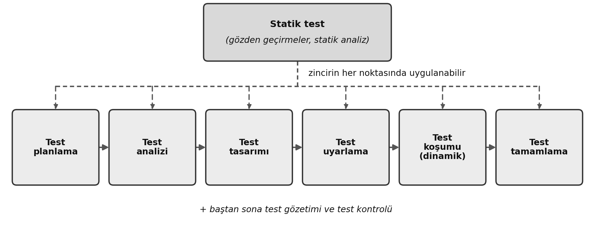
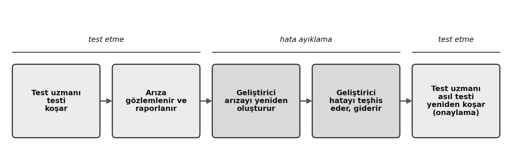
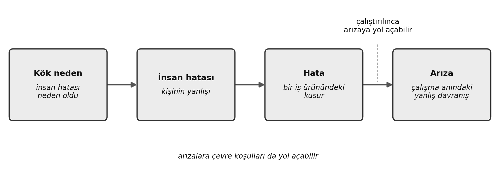
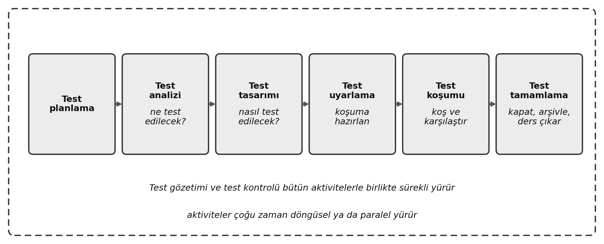
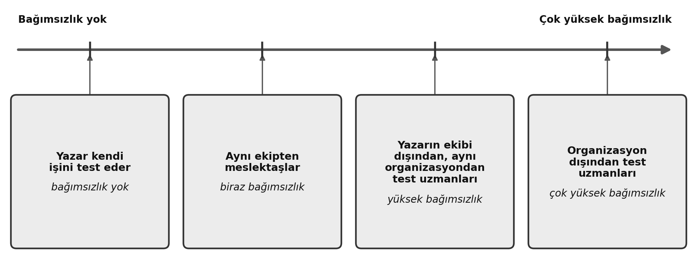

Bölüm 1 — Yazılım Testinin Temelleri
Öğrenme hedefleri: 14 · K1 3 / K2 11 / K3 0 · Bu bölümden sınav sorusu: 8
Anahtar kelimeler: kapsam (coverage), hata ayıklama (debugging), hata (defect), insan hatası (error), arıza (failure), kalite (quality), kalite güvence (quality assurance), kök neden (root cause), test analizi (test analysis), test esası (test basis), test senaryosu (test case), test tamamlama (test completion), test koşulu (test condition), test kontrolü (test control), test verisi (test data), test tasarımı (test design), test koşumu (test execution), test uyarlama (test implementation), test gözetimi (test monitoring), test nesnesi (test object), test hedefi (test objective), test planlama (test planning), test prosedürü (test procedure), test süreci (test process), test sonucu (test result), test etme (testing), test çalışma ürünleri (testware), izlenebilirlik (traceability), sağlama (validation), doğrulama (verification)
Bu bölüm kitabın omurgasıdır. Sonraki bütün bölümler burada kurduğunuz kelime dağarcığının üzerine oturur. Bu yüzden amaç problem çözmek değil, terimlere ve resmî listelerin ardındaki mantığa sağlam biçimde hâkim olmaktır. Bu bölümde K3 (uygulama seviyesi) öğrenme hedefi yok. Sınavın kırk sorusundan sekizi bu konulardan gelir. Bu sorular genellikle tanımları, iki resmî listeyi (yedi prensip ve yedi aktivite) ve birbirine komşu fikirler arasındaki ince çizgiyi yoklar; insan hatası, hata ve arıza arasındaki fark buna bir örnektir. Terimler zihninizde netleştiğinde bu sorular hızlanır. Birçoğu soru kökündeki tek bir kelimeye bağlıdır.
1.1 Yazılım Testi Nedir?
Test, yazılımı çalıştırmaktan ibaret değildir
“Test” kelimesini ilk duyduklarında insanlar çoğu zaman yazılımı çalıştırıp ne olduğunu izleyen birini düşünür. Gerçek test bundan çok daha geniştir. İşi planlamayı, neyin test edileceğini analiz etmeyi, testleri tasarlamayı, hazırlamayı, sonuçları raporlamayı ve test nesnesinin kalitesini değerlendirmeyi kapsar. (Test edilen iş ürünü (work product) test nesnesi (test object) olarak adlandırılır.) Başka bir deyişle test süreci ortada tek satır kod yokken başlar ve koşum bittikten sonra da sürer.
Yazılımı çalıştırarak yaptığınız kısma dinamik test (dynamic testing) denir. Yazılımı çalıştırmadan yaptığınız iş, örneğin bir gereksinim belgesini gözden geçirmek, statik test (static testing) kapsamındadır; Bölüm 3 bu konuyu ayrıntılı ele alır. Akılda tutulacak nokta şudur: test bir aktiviteler zinciridir ve yazılımı koşmak bu zincirin yalnızca bir halkasıdır. Şekil 1.1 bu aktivite zincirini ve statik testin zincirde nereye oturduğunu gösteriyor. Statik test, bu zincirin herhangi bir noktasındaki iş ürünlerine uygulanabilir.

En başta sabitlenmeye değer bir terim çifti var, çünkü kitabın geri kalanı ona sürekli dayanır. Doğrulama (verification) “Ürünü doğru mu geliştiriyoruz?” diye sorar. Yazılımın belirtilmiş gereksinimleri karşılayıp karşılamadığını kontrol eder. Sağlama (validation) “Doğru ürünü mü geliştiriyoruz?” diye sorar. Yazılımın kullanıcıların ve paydaşların gerçek iş ihtiyaçlarını karşılayıp karşılamadığını kontrol eder. Test süreci ikisini de kapsar. Bir ürün bütün doğrulama adımlarından geçip yine de sağlamada başarısız olabilir. Örneğin bir bordro sistemi her tutarı tam da spesifikasyonun söylediği gibi hesaplayabilir. Ama spesifikasyon, çalışanların üçte birinin tabi olduğu yarı zamanlı sözleşmeleri hiç kapsamıyorsa, bütün testler geçerken sistem onu kullanan insanları yine de yarı yolda bırakır.
Tipik test hedefleri (FL-1.1.1 — K1)
Ders programı (syllabus), test aktivitelerinin ardındaki dokuz gerekçeyi sıralar. Sınavda bunların her birini meşru bir test hedefi (test objective) olarak tanımanız gerekir:
- iş ürünlerini (gereksinimler, kullanıcı hikayeleri (user stories), tasarımlar, kod) değerlendirmek;
- arızaları tetiklemek, hataları bulup ortaya koymak;
- test nesnesinin gerekli kapsama ulaşmasını sağlamak;
- yazılım kalitesinin yetersiz kalması riskini düşürmek;
- belirtilmiş gereksinimlerin karşılanıp karşılanmadığını doğrulamak;
- test nesnesinin sözleşmeden, yasalardan ve düzenlemelerden doğan yükümlülükleri karşıladığını doğrulamak;
- paydaşlara bilinçli karar verebilmeleri için açık bilgi sağlamak;
- test nesnesinin kalitesine güven oluşturmak;
- test nesnesinin eksiksiz olduğunu ve paydaşların beklediği gibi davrandığını teyit etmek.
Test hedefleri bağlama göre değişebilir: test edilen iş ürünü, test seviyesi, riskler, yazılım geliştirme yaşam döngüsü (YGYD; software development lifecycle, SDLC) ve pazara çıkış süresi gibi iş etkenleri bu bağlamın parçalarıdır. Yukarıda tanıtılan iki terime dikkat edin: beşinci ve altıncı hedefler doğrulama hedefleridir, dokuzuncu hedef ise bir sağlama hedefidir.
Dokuz maddelik bir listeyi akılda tutmayı kolaylaştırmak için hedefleri dört temada toplayabilirsiniz. Değerlendirme ve keşif, iş ürünlerini değerlendirmeyi ve arızaları tetiklemeyi kapsar. Uygunluk ve beklentiler, belirtilmiş gereksinimleri doğrulamayı, yasal ve düzenleyici uygunluğu doğrulamayı ve paydaş beklentilerini karşılamayı kapsar. Kapsam ve risk yönetimi, gerekli kapsamı (coverage) sağlamayı ve riski azaltmayı kapsar. Bilgi ve güven, kararlar için bilgi sağlamayı ve kaliteye güven oluşturmayı kapsar.
Uygulamada. Bir sürüm kararının hemen öncesinde ürün sahibi test ekibine tek bir soru sorar: “Bu ürüne ne kadar güveniyoruz?” Ekip, güncel kapsam rakamları ve kalan risklerin analiziyle cevap verir. O anda, son test aktiviteleri yeni bir hata bulmamış olsa bile, test yedinci ve sekizinci hedefleri karşılıyordur: bilgi sağlıyor ve güven oluşturuyordur. Testin değeri yalnızca hata bulmaya bağlı değildir.
Sınav odağı. Yaygın bir kalıp size birbirine benzeyen birkaç şık verir ve gerçek bir test hedefi olanı seçmenizi ister. Başka bir disiplinin aktivitesini adlandıran şıklara dikkat edin: hataları düzeltmek hata ayıklamadır (bir geliştirme aktivitesi), süreci iyileştirerek hataları önlemek ise kalite güvencedir. Hiç hata kalmadığını ispatlamak ise, birinci prensibin göstereceği gibi, mantıken imkansızdır. Bir şıkkı seçmeden önce onun bir geliştirme ya da kalite güvence aktivitesi olmadığından emin olun.
Hemen Pekiştir
HP 1.1.1-a. Aşağıdaki hedeflerden hangisi doğrulamayla değil sağlamayla ilgilidir?
- (a) Belirtilmiş gereksinimlerin karşılanıp karşılanmadığını kontrol etmek
- (b) Test nesnesinin sözleşmeden doğan ve yasal gereksinimlere uygun olup olmadığını kontrol etmek
- (c) Test nesnesinin eksiksiz olduğunu ve paydaşların beklediği gibi çalıştığını kontrol etmek
- (d) Test nesnesinde gerekli kapsama ulaşılıp ulaşılmadığını kontrol etmek
Cevabı göster
Cevap: (c). “Doğru ürünü mü geliştiriyoruz?” sorusu sağlamadır. (a) ve (b) şıkları gereksinimlere uygunluğu kontrol eder, bu doğrulamadır; (d) bir kapsam hedefidir.
HP 1.1.1-b. Aşağıdakilerden hangisi meşru bir test hedefi DEĞİLDİR?
- (a) Test nesnesinin kalitesine güven oluşturmak
- (b) Paydaşlara kararları için bilgi sağlamak
- (c) Hatalara yol açan geliştirme sürecini iyileştirmek
- (d) Yazılım kalitesinin yetersiz kalması riskini azaltmak
Cevabı göster
Cevap: (c). Hataları önlemek için süreci iyileştirmek bir test hedefi değil, kalite güvencedir. Diğer üçü resmî listede yer alır.
HP 1.1.1-c. Bir ekip, sürümden önce onaylanmış spesifikasyondaki her fonksiyonel gereksinimi teslim edilen yapıya (build) karşı kontrol ediyor. Ekip hangi tür test hedefinin peşindedir?
- (a) Bir doğrulama hedefi, çünkü belirtilmiş gereksinimlere uygunluğu kontrol ediyor
- (b) Bir sağlama hedefi, çünkü kullanıcıların gerçek ihtiyaçlarını kontrol ediyor
- (c) Bir kalite güvence hedefi, çünkü geliştirme sürecini iyileştiriyor
- (d) Bir hata ayıklama hedefi, çünkü bulunan hataları gideriyor
Cevabı göster
Cevap: (a). Ürünü belirtilmiş olana karşı kontrol etmek “Ürünü doğru mu geliştiriyoruz?” sorusunu yanıtlar; bu doğrulamadır. Sağlama, ürünün paydaşların gerçek ihtiyaçlarını karşılayıp karşılamadığını sorardı; (c) ve (d) ise hiç test hedefi değildir.
Test etme ve hata ayıklama (FL-1.1.2 — K2)
Test etme (testing) ve hata ayıklama (debugging), iş bölümü net olan iki farklı aktivitedir. Test etme, yazılımı çalıştırarak arızaları tetikler (dinamik test) ya da bir iş ürünündeki hataları doğrudan bulur (statik test). Hata ayıklama ise bir geliştirme aktivitesidir: amacı bir arızanın nedenini bulmak, analiz etmek ve ortadan kaldırmaktır.
İşin iyi yanı, amaçlarını ayırdığınızda bu ayrımı akılda tutmak kolaylaşır. Test etme, arızaların oluştuğunu gösterir ya da hataları doğrudan bulur. Hata ayıklama, bir arızanın nedenini bulur ve giderir. Birincisini test uzmanları (ve bütün ekip), ikincisini geliştiriciler yapar. Düzeltmeden sonra, düzeltmenin işe yarayıp yaramadığını görmek için asıl test yeniden koşulur; bu takip koşumu onaylama testi (confirmation testing) olarak adlandırılır ve Bölüm 2’de ele alınır. Tercihen ilk testi koşan kişi tarafından yapılır. Şekil 1.2, ilk başarısız testten onaylayan yeniden koşuma kadar bu döngüyü gösteriyor.

Dinamik test bir arıza ortaya çıkardığında hata ayıklama genellikle üç adım izler: arızayı yeniden oluşturmak, onu teşhis etmek (arızaya yol açan hatayı bulmak) ve hatayı gidermek. Statik testte süreç daha basittir. Çalışan bir yazılım olmadığı için yeniden oluşturulacak bir arıza da yoktur; hata zaten belgede ya da kodda görünürdür, dolayısıyla buradaki hata ayıklama hatayı doğrudan düzeltmekten ibarettir.
Tablo 1.1 — Test etme ve hata ayıklama
| Boyut | Test etme | Hata ayıklama |
|---|---|---|
| Aktivitenin türü | Bir test aktivitesi | Bir geliştirme aktivitesi |
| Ana amaç | Arızaları tetiklemek (dinamik test) ya da hataları doğrudan bulmak (statik test) | Bir arızanın nedenini bulmak, analiz etmek ve ortadan kaldırmak |
| Tipik adımlar | Testleri koşmak, arızaları gözlemlemek ve raporlamak | Arızayı yeniden oluşturmak, hatayı teşhis etmek ve gidermek; statik testten sonra yalnızca hatayı ortadan kaldırmak |
| Genellikle kim yapar | Test uzmanları ve bütün ekip | Geliştiriciler |
Uygulamada. Eve geliyorsunuz ve banyo tavanından su damladığını fark ediyorsunuz. Sızıntıyı görüp apartman yöneticisine bildirmek test etmedir: işi yalnızca sorunu görünür kılmak ve olanı kayda geçirmektir. Üst kattaki komşunuzun bir tesisatçı çağırması, tesisatçının tavanı inceleyip suyun nereden geldiğini bulması, patlak bir boru teşhis edip boruyu değiştirmesi hata ayıklamadır. Ardından, boruyu basınç altına sokmak için üst kattaki bütün muslukları bilerek açıp tavanınızın hâlâ damlayıp damlamadığına bakmak onaylama testidir.
Sınav odağı. Bir senaryo sorusu size bir olaylar dizisi verip aktiviteleri sırasıyla adlandırmanızı isteyebilir. Standart doğru akış şudur: test etme, sonra hata ayıklama, sonra onaylama testi. Cazip bir yanlış şık onaylama testinin yerine regresyon testi (regression testing) koyar. Bu fark önemlidir ve Bölüm 2 konuya geri döner; şimdilik şu ipucunu aklınızda tutun: onaylama testi asıl hatanın düzeltilip düzeltilmediğini kontrol eder, regresyon testi ise bir değişikliğin sistemin herhangi bir yerinde olumsuz sonuçlara yol açıp açmadığını kontrol eder.
Hemen Pekiştir
HP 1.1.2-a. Bir geliştirici raporlanan bir arızayı yeniden oluşturuyor, koddaki hatayı teşhis ediyor ve düzeltiyor. Bu hangi aktivitedir?
- (a) Test etme
- (b) Statik test
- (c) Hata ayıklama
- (d) Onaylama testi
Cevabı göster
Cevap: (c). Bir arızanın nedenini bulmak ve ortadan kaldırmak, bir geliştirme aktivitesi olan hata ayıklamadır. Test etme yalnızca arızayı görünür kılar; düzeltmeyi kontrol etmek onaylama testidir.
HP 1.1.2-b. Test etme ile hata ayıklama arasındaki temel ayrım nedir?
- (a) Test etme nedeni bulur; hata ayıklama arızayı gösterir
- (b) Test etme arızayı tetikler ya da gösterir; hata ayıklama nedeni bulur ve ortadan kaldırır
- (c) İkisi de yalnızca geliştiricinin sorumluluğudur
- (d) İkisi de yalnızca dinamik testte gerçekleşir
Cevabı göster
Cevap: (b). Test etme arızaları ortaya çıkarır (ya da hataları doğrudan bulur); hata ayıklama, nedeni bulan ve ortadan kaldıran geliştirme aktivitesidir.
HP 1.1.2-c. Bir gereksinim spesifikasyonunun gözden geçirmesi sırasında Tolga iki iş kuralı arasında bir çelişki buluyor. Bu durumda hata ayıklama neyi kapsar?
- (a) Arızayı teşhis etmeden önce bir test ortamında yeniden oluşturmayı
- (b) Hata ortadan kaldırılmadan önce onaylama testi koşmayı
- (c) Hatayı doğrudan ortadan kaldırmayı, çünkü yeniden oluşturulacak ya da teşhis edilecek bir arıza yoktur
- (d) Hiçbir şeyi, çünkü statik testle bulunan hataların düzeltilmesi gerekmez
Cevabı göster
Cevap: (c). Statik test hataları doğrudan bulur ve arızaya yol açamaz; bu yüzden hata ayıklama yalnızca hatayı ortadan kaldırmaktır. Yeniden oluşturma ve teşhis, dinamik testle bulunan arızalara aittir.
1.2 Yazılım Testi Neden Gereklidir?
Test etme başarıya nasıl katkı sağlar (FL-1.2.1 — K2)
Test etme, bir projenin başarısına birkaç somut yoldan katkı sağlar. Her birini belirsiz bir fayda olarak değil, ölçülebilir bir değer olarak görmek işe yarar. Hataları erken bulmak bunun en açık örneğidir: bir sorunu gereksinim belgesi henüz gözden geçirilirken yakalamak birkaç dakikalık bir düzeltmeye mal olur; aynı yanlış anlama üretimde ortaya çıkarsa kesintilere, acil düzeltmelere ve memnuniyetsiz kullanıcılara yol açabilir. Test etme kaliteyi de doğrudan değerlendirir. Yazılım geliştirme yaşam döngüsünün bütün iş ürünleri hakkında yönetime gerçek veri sağlar; böylece sürüm kararları kanıta dayanır. Test etmenin bulduğu hatalar daha sonra hata ayıklamayla ortadan kaldırılır; hata ayıklama bir test aktivitesi değildir, dolayısıyla test etme daha yüksek kaliteye dolaylı olarak katkı sağlar. Test etme yalnızca test uzmanlarının işi de değildir: herhangi bir paydaş, test becerilerini kullanarak projenin başarısına yardım edebilir. Test etme, son kullanıcının bakış açısını geliştirme boyunca masada tutar; bu da teslim edilen ürünün gerçek ihtiyaçları karşılama olasılığını artırır. Test kanıtının istendiği yerlerde de kuruluşun sözleşmeden, yasalardan ve düzenlemelerden doğan standartları karşılamasına yardım eder.
Uygulamada. Bir hastane randevu sistemi geliştirilirken gereksinimler, tek satır kod yazılmadan önce gözden geçirilir. Bir test uzmanı sorar: “Bir hasta aynı saat dilimi için iki farklı doktordan randevu almaya çalışırsa ne olur?” Bu durumun kuralı analiz belgesinde hiç yer almamıştır. Boşluğu kâğıt üzerinde yakalamak on dakikalık bir toplantıya mal olur; binlerce hastanın bunu üretimde keşfetmesine izin vermek ise operasyonel bir krize dönüşür.
Sınav odağı. Bu hedef, senaryo eşleştirme sorularıyla sınanabilir: size bir olay verilir ve bunun test etmenin gerçek bir katkısı olup olmadığı sorulur. Dikkat edilecek tuzak, test etmenin hataları kendisinin onardığı ya da kaliteyi doğrudan eklediği bir şıktır. Test etme kaliteye dolaylı katkı sağlar: hata ayıklamanın daha sonra ortadan kaldıracağı hataları bulur. Bir cevabı işaretlemeden önce, şıkkın bir kodlama ya da onarım görevini değil, test etmenin sağladığı bilgiyi, analizi ya da değerlendirmeyi anlattığından emin olun.
Hemen Pekiştir
HP 1.2.1-a. Bir gereksinim belgesindeki muğlak bir kural, tek satır kod yazılmadan önce bir gözden geçirmede yakalanıp düzeltiliyor. Bu, test etmenin hangi katkısıdır?
- (a) Hataları erken bulmak
- (b) Yasal ve sözleşmesel uygunluğu sağlamak
- (c) Son kullanıcının bakış açısını temsil etmek
- (d) Ürüne doğrudan kalite eklemek
Cevabı göster
Cevap: (a). Hata en ucuz aşamada, kodlamadan önce yakalandı. (d) yanlıştır, çünkü test etme kaliteyi doğrudan eklemez; daha sonra ortadan kaldırılan hataları bularak dolaylı katkı sağlar.
HP 1.2.1-b. Aşağıdakilerden hangisi test etmenin gerçek bir katkısı DEĞİLDİR?
- (a) Hataları erken ve ucuza bulmak
- (b) İş ürünlerinin kalitesini doğrudan değerlendirmek
- (c) Bulunan hataları onarmak
- (d) Düzenleyici uygunluk için kanıt sağlamak
Cevabı göster
Cevap: (c). Hataları onarmak, bir geliştirme aktivitesi olan hata ayıklamadır. Test etmenin sağladığı şey bilgi ve değerlendirmedir.
HP 1.2.1-c. Bir düzenleyici kurum, yeni bir kredi sistemi canlıya alınmadan önce bir bankadan belgelenmiş test kanıtı istiyor ve ekip test raporlarını sunuyor. Bu, test etmenin hangi katkısını gösterir?
- (a) Hataları erken, ortadan kaldırılmaları daha ucuzken bulmak
- (b) Kullanıcıları projede dolaylı olarak temsil etmek
- (c) Ürünün daha yüksek kaliteye ulaşması için hataları ortadan kaldırmak
- (d) Sözleşmeden, yasalardan ya da düzenlemelerden doğan gereksinimleri karşılamak
Cevabı göster
Cevap: (d). Sözleşmeler, yasalar ve düzenleyici kurumlar test isteyebilir; bunları karşılayan, ortaya çıkan test kanıtıdır. (c) şıkkı test etmeyi değil hata ayıklamayı anlatır.
Test etme ve kalite güvence (FL-1.2.2 — K1)
Günlük kullanımda “test” ile kalite güvence (quality assurance, QA) çoğu zaman aynı şeymiş gibi ele alınır. Yakından ilişkilidirler ama aynı şey değildirler. Test etme bir kalite kontrol (quality control) biçimidir: ürüne odaklıdır ve düzelticidir; var olan iş ürünlerindeki ya da koddaki hataları ortaya çıkarmaya çalışır. Kalite güvence ise sürece odaklıdır ve önleyicidir; daha baştan daha az hata çıkmasını sağlayacak standartları, süreçleri ve iyi uygulamaları kurar. Kalite güvence hem geliştirme hem test süreçlerine uygulanır ve projedeki herkesin sorumluluğudur. İyi bir sürecin doğru izlendiğinde iyi bir ürün ortaya çıkaracağı varsayımıyla çalışır.
Başka bir deyişle test etme üretilmiş ürünü inceler, kalite güvence ise ürünün üretilme biçimini iyileştirir. İkisi birlikte çalışır ve birbirini besler. Örneğin test ekibinin bulduğu hatalarda tekrar eden bir örüntü, kalite güvencenin geliştirme sürecindeki zayıf bir noktayı görüp iyileştirmek için kullanabileceği değerli bir girdidir.
Tablo 1.2 — Test etme ve kalite güvence
| Boyut | Test etme (bir kalite kontrol biçimi) | Kalite güvence (QA) |
|---|---|---|
| Odak | Ürün | Süreç |
| Nitelik | Düzeltici: var olan iş ürünlerindeki hataları ortaya çıkarır | Önleyici: daha az hata çıkması için süreçleri kurar ve iyileştirir |
| Temel soru | “Bu üründe hata var mı?” | “İyi bir ürün ortaya çıkaran bir süreci mi izliyoruz?” |
| Test sonuçlarının kullanımı | Hataları düzeltmek için | Geliştirme ve test süreçlerinin ne kadar iyi işlediğine dair geri bildirim olarak |
Sınav odağı. Bu hedefteki sorular “ürün ve düzeltici” ile “süreç ve önleyici” ayrımına dayanır. Yanlış bir şık, süreç seviyesinde hata önlemeye yönelik bir aktiviteyi anlatıp ona test diyebilir ya da test aktivitesinin kendisinin gidip hataları onardığını iddia edebilir. Odağın ürün mü süreç mi olduğunu sorarak sınıflandırın.
Hemen Pekiştir
HP 1.2.2-a. Üç projeden sonra bir ekip, geliştirme sürecinin hangi adımında hataların çoğunun ortaya çıktığını analiz ediyor ve o adımı değiştiriyor. Bu hangi aktivitedir?
- (a) Test etme (bir kalite kontrol biçimi)
- (b) Kalite güvence (QA)
- (c) Onaylama testi
- (d) Hata ayıklama
Cevabı göster
Cevap: (b). Sürece odaklı, önleyici bir aktivite kalite güvencedir. Test etme ürüne odaklı ve düzelticidir.
HP 1.2.2-b. Bir ekip, gelecekte daha az hata çıkması için kod gözden geçirme standartları ve süreç kontrol listeleri tanımlıyor. Bu hangi aktivitedir?
- (a) Test etme (kalite kontrol)
- (b) Onaylama testi
- (c) Regresyon testi
- (d) Kalite güvence (QA)
Cevabı göster
Cevap: (d). Bu önleyici, süreç seviyesinde bir iştir; dolayısıyla kalite güvencedir.
HP 1.2.2-c. Aşağıdaki ifadelerden hangisi kalite güvenceden ayrı olarak test etmeyi tanımlar?
- (a) Sürece yönelik, önleyici bir yaklaşımdır
- (b) İyi bir sürecin doğru izlendiğinde iyi bir ürün ortaya çıkaracağı fikriyle çalışır
- (c) Ürüne yönelik, düzeltici bir yaklaşımdır
- (d) Başlıca projeler genelinde geliştirme standartlarını iyileştirerek çalışır
Cevabı göster
Cevap: (c). Test etme ürünü inceler ve hatalarını, düzeltilebilmeleri için ortaya çıkarır. (a), (b) ve (d) şıklarının hepsi kalite güvenceyi anlatır.
İnsan hataları, hatalar, arızalar ve kök nedenler (FL-1.2.3 — K2)
Bu, ders programındaki merkezî kavram zincirlerinden biridir ve sınavdan önce netleşmiş olması gerekir. Süreç doğrusal bir neden-sonuç ilişkisi izler. İnsan hatası (error; mistake olarak da bilinir), bir kişinin yaptığı yanlış eylemdir; çoğu zaman zaman baskısı, karmaşıklık, yorgunluk ya da eğitim eksikliği altında ortaya çıkar. Hata (defect; fault ya da bug olarak da bilinir), o insan hatasının bir iş ürünündeki somut sonucudur: bir gereksinim belgesinde, bir tasarımda, bir kod satırında ya da bir yapılandırma dosyasında kalan kusurdur. Arıza (failure), koddaki bir hata çalıştırıldığında yazılımın gösterdiği yanlış davranıştır; hatanın dışarıdan görünür hale gelmesidir. Şekil 1.3, zinciri başlatan ve bu kesimin ilerisinde açıklanan kök neden de dahil olmak üzere zincirin tamamını gösteriyor.

Zincir her zaman baştan sona temiz biçimde ilerlemez. Bilinmeye değer iki istisnası vardır.
Birincisi, her hata bir arızaya yol açmaz. Bazı hatalar seyrek çalışan ya da hiç çalışmayan kodda durur (bunlara bazen uykudaki hata denir). Yalnızca 29 Şubat’ta çalışan hatalı bir hesaplama içeren bir rezervasyon sistemi düşünün. Bu hata, üretimde onu tetikleyecek bir artık gün yaşanmadığı için, tek bir arızaya yol açmadan kodda üç yıl bekleyebilir. Hata gerçektir; yalnızca henüz bir arıza üretmemiştir.
İkincisi, arızaların tek nedeni insan hataları ve hatalar değildir. Bir sistem bazen çevresi yüzünden arızalanabilir. Ders programı fiziksel bir örnek verir: radyasyon ya da elektromanyetik alanlar donanım yazılımında (firmware) hatalara neden olabilir ve arızalara yol açabilir. Kaynak, koddaki bir insan hatası değil, çevre koşullarıdır. (Bununla ilişkili ama ayrı bir durum, ortama eski veri yüklendiği için bir arıza raporlayan testtir. Kesin konuşmak gerekirse bu bir yanlış pozitif sonuçtur (false-positive result): gerçek bir arıza değil, yanlış bir test sonucudur.)
Bu zincirin en başında kök neden (root cause) durur: insan hatasına yol açan temel neden. Kök neden analizi, tipik olarak bir arıza meydana geldiğinde ya da bir hata bulunduğunda kök nedeni belirler. Kök nedeni ele almak, örneğin onu ortadan kaldırmak, tek bir hatayı düzeltmekten fazlasını yapar; benzer arızaların ya da hataların önlenmesi, en azından sıklıklarının azalması beklenir. Örneğin bir faturalama sisteminde kök neden, vergi kuralı değişikliklerinin ekiplere hiçbir gözden geçirme olmadan gayri resmî e-postalarla iletilmesi olabilir; insan hatası, geliştiricinin yuvarlama kuralını yanlış okumasıdır; hata, koda yazılan yanlış yuvarlama kuralıdır; arıza da müşterilerden her ay yanlış tutarın tahsil edilmesidir. Kodu düzeltmek o tek faturalama sorununu çözer. Kök nedeni ele almak ise, vergi kuralları için resmî ve gözden geçirilen bir değişiklik süreci kurarak, geliştiricinin bir sonraki kuralı da yanlış okuma olasılığını çok daha düşük hale getirir.
Tablo 1.3 — Bir faturalama sisteminde kök neden zinciri
| Zincirdeki adım | Nedir | Faturalama sistemi örneği |
|---|---|---|
| Kök neden | İnsan hatasının yaşanmasının altında yatan neden | Vergi kuralı değişiklikleri ekiplere gözden geçirilmeden, gayri resmî e-postalarla ulaşıyor |
| İnsan hatası | Bir kişinin yanlış eylemi | Geliştirici e-postadaki yuvarlama kuralını yanlış okuyor |
| Hata | Bir iş ürününde kalan kusur | Kod, vergi tutarını yarımı yukarı yuvarlamak yerine her zaman aşağı yuvarlıyor |
| Arıza | Çalışma anında görülen yanlış davranış | Müşterilerden her ay yanlış tutar tahsil ediliyor |
Sınav odağı. Senaryo soruları bir olaylar dizisi anlatıp hangi adımın insan hatası, hata, arıza ya da kök neden olduğunu sorabilir. Çapalarınızı keskin tutun: bir kişinin eylemi insan hatasıdır; bir belgede ya da kodda duran statik kusur hatadır; ekranda ya da çıktıda gözlemlediğiniz sistem sapması arızadır; insan hatasına yol açan temel neden (örneğin zaman baskısı, eksik eğitim ya da eksik bir gözden geçirme adımı) kök nedendir. Bunları, ortada bir hata olmadığı halde testin bir arıza raporladığı yanlış pozitif sonuçla karıştırmayın; Bölüm 5 hata yönetimi başlığı altında bu konuya döner.
Hemen Pekiştir
HP 1.2.3-a. Bir geliştirici bir fiyat listesinden indirim oranını kopyalarken bir rakamı yanlış yazıyor ve böylece koda yanlış bir indirim oranı giriyor. Kod üretimde çalıştığında müşterilere hatalı tutarlar gösteriliyor. Bu zincirde müşterilere gösterilen hatalı tutarlar nedir?
- (a) İnsan hatası
- (b) Hata
- (c) Arıza
- (d) Kök neden
Cevabı göster
Cevap: (c). Hatanın çalıştırılıp dışarıdan görünür hale gelmesi arızadır. Yazım kayması insan hatası, koddaki yanlış oran ise hatadır.
HP 1.2.3-b. Hatalı bir hesaplama yalnızca 29 Şubat’ta çalışıyor ve üretimde artık gün yaşanmadığı için üç yıldır hiçbir arızaya yol açmamış. Bu hangi gerçeği gösterir?
- (a) Her arıza bir hatadan kaynaklanır
- (b) Bir hata her zaman bir arızaya yol açmaz
- (c) Hatalar belli alanlarda yoğunlaşır
- (d) Test etme hataların yokluğunu ispatlar
Cevabı göster
Cevap: (b). Hiç çalıştırılmayan bir hata gerçektir ama tetiklenene kadar arıza üretmez.
HP 1.2.3-c. Doğru yazılmış bir donanım yazılımı, güçlü bir elektromanyetik alan belleğini bozduğu için yanlış davranıyor. Bu hangi gerçeği gösterir?
- (a) Arızalara yalnızca insan hataları ve hatalar değil, çevre koşulları da yol açabilir
- (b) Her hata bir arızaya yol açmak zorundadır
- (c) Kök neden her zaman bir kişidir
- (d) Statik test bu arızayı önlerdi
Cevabı göster
Cevap: (a). Arıza bir insan hatasından değil, bir çevre koşulundan başlıyor: kod doğru yazılmış olsa bile alan, donanım yazılımının belleğini bozuyor.
HP 1.2.3-d. İşi çabuk bitirme baskısı altındaki bir ürün sahibi, azami kredi vadesini yanlış yazdığı bir kullanıcı hikayesi oluşturuyor. Geliştirici hikayeyi tam yazıldığı gibi gerçekleştiriyor. Üretimde bir başvuru sahibi, kredi verenin izin vermediği bir vadeyle kredi teklifi alıyor. Aşağıdakilerden hangisi bu zincirdeki hatadır?
- (a) Ürün sahibi üzerindeki zaman baskısı
- (b) Ürün sahibinin vadeyi yazarken yaptığı kayma
- (c) Kullanıcı hikayesine yazılan yanlış azami vade
- (d) İzin verilmeyen bir vadeyle yapılan kredi teklifi
Cevabı göster
Cevap: (c). Hata bir iş ürünündeki kusurdur ve kullanıcı hikayesi bir iş ürünüdür. Kayma insan hatası, kredi teklifi arıza, zaman baskısı ise olası bir kök nedendir.
1.3 Test Prensipleri (FL-1.3.1 — K2)
Yedi test prensibi, bütün test aktivitelerinde geçerli olan genel yol göstericilerdir. Sınavda kısa bir iş senaryosunu okuyup hangi prensibe işaret ettiğini tanımanız beklenir. Aşağıda her prensibi, sade bir yeniden anlatımla ve onu ele veren senaryo türüyle birlikte bulacaksınız. Prensiplerin adları TTB ders programındaki adlardır (beşinci ve yedinci prensip hariç; aşağıdaki terim notuna bakın).
Birinci prensip: Testin amacı, yazılımda hataların olduğunu göstermektir; yazılımda hata kalmadığını ispatlamak değildir (testing shows the presence, not the absence, of defects). Test etme hataların var olduğunu kanıtlayabilir, ama hiç hata kalmadığını hiçbir zaman kanıtlayamaz. Senaryodaki işaret, “2.000 testimizin hepsi geçti, demek ki yazılımımızda hata yok” gibi bir iddiadır; bu iddia mantıken geçersizdir.
İkinci prensip: Yazılımı %100 test etmek imkansızdır (exhaustive testing is impossible). Önemsiz durumlar dışında olası her girdiyi denemek erişilemez bir hedeftir; bu yüzden eforu test teknikleri, test senaryosu önceliklendirme ve risk bazlı test (risk-based testing) odaklar. İşaret, hepsi denenemeyecek milyonlarca olası girdi kombinasyonundan söz eden bir senaryodur.
Üçüncü prensip: Erken test, zaman ve para tasarrufu sağlar (early testing saves time and money). Bir hata ne kadar erken yakalanıp düzeltilirse projeye maliyeti o kadar düşük olur. Hataları erken bulmak için hem statik test hem dinamik test mümkün olduğunca erken başlamalıdır. İşaret, gereksinimler gözden geçirilirken (statik test) yakalanan ve sonradan yaşanacak bir krizi önleyen mantık hatasıdır.
Dördüncü prensip: Hatalar yazılımın belli alanlarında yoğunlaşır (defects cluster together). Az sayıda bileşen genellikle bulunan hataların çoğunu barındırır ya da arızaların çoğundan sorumludur (bu, Pareto prensibinin (Pareto principle) bir örneğidir). İşaret, “geçen çeyrekteki kritik kesintilerin yüzde 80’i yalnızca ödeme modülünden geldi” gibi bir istatistiktir.
Beşinci prensip: Testler yıpranır (tests wear out). Bu prensibin TTB ders programındaki adı “antibiyotik direnci”; ISTQB® v3.1’deki eski adı “pestisit paradoksu (pesticide paradox)”. Aynı testler hiç değiştirilmeden tekrar tekrar koşulursa yeni hataları bulmada giderek etkisizleşir; bu yüzden test gruplarının (test suite) gözden geçirilmesi ve güncellenmesi gerekir. Yine de bazı durumlarda aynı testleri tekrarlamanın faydalı bir sonucu olabilir; otomatik regresyon testinde olduğu gibi. v3.1’deki eski adı değil, güncel adı kullanın. İşaret, “regresyon test grubumuz altı aydır yeni bir hata bulmadı; onu tazelememiz gerekiyor” gibi bir senaryodur.
Altıncı prensip: Yazılım testi, projenin bağlamına, koşullarına göre değişiklik gösterir (testing is context dependent). Her proje aynı biçimde test edilmez; bir tıbbi cihaz için yaklaşım, titizlik ve strateji bir mobil oyundakinden farklıdır. İşaret, aynı derinlikte test edilemeyecek kadar farklı iki sistemi karşılaştıran bir senaryodur.
Yedinci prensip: Hatasızlık yanılgısı (absence-of-defects fallacy). Bu prensibin TTB ders programındaki adı “Yeni hata bulamıyoruz başarılı bir yazılım elde ettik yanılgısı”; ISTQB® v3.1’deki eski adı “absence-of-errors fallacy”. Belirtilmiş bütün gereksinimleri test etmek ve bulunan bütün hataları düzeltmek, sistemin başarılı olacağını garanti etmez. Sistem yine de kullanıcıların ihtiyaçlarını ve beklentilerini karşılamayabilir, müşterinin iş hedeflerine ulaşmasına yardım etmeyebilir ya da rakip sistemlerin gerisinde kalabilir. İşaret, “analiz belgesindeki her kural doğrulandı ve sistem kusursuz çalışıyor, ama kullanıcılar kafa karıştırıcı arayüz yüzünden sistemi bırakıyor” gibi bir senaryodur.
Yedinci prensip biraz daha dikkati hak ediyor, çünkü daha önce çizilen doğrulama–sağlama çizgisine doğrudan bağlanır. Bir geliştirme ekibi, yazılı spesifikasyona göre teknik olarak kusursuz bir ürün üretebilir. Ama spesifikasyonun kendisi kullanıcının gerçek ihtiyacını en baştan kaçırmışsa, teslim edilen ürün işe yaramaz. Teknik doğrulama başarılı olmuş, sağlama başarısız olmuştur.
Terim notu: v3.1 → v4.0 ve TTB adları. İki prensibin adı ISTQB® v4.0 ile değişti; TTB ders programı ise bu iki prensibe kendi adlarını verir. Bu kitap aşağıdaki sağ sütundaki adları kullanır. Eski ya da farklı adlarla karşılaşırsanız (eski kaynaklarda, v3.1 örnek sorularında) aynı prensibi tanıyın:
- “pestisit paradoksu (pesticide paradox)”, v3.1 · TTB: “antibiyotik direnci” → testler yıpranır (tests wear out)
- “absence-of-errors fallacy”, v3.1 · TTB: “Yeni hata bulamıyoruz başarılı bir yazılım elde ettik yanılgısı” → hatasızlık yanılgısı (absence-of-defects fallacy)
Tablo 1.4 — Yedi test prensibi bir bakışta
| Resmî ad | Sade anlamı | Sınav senaryolarında nasıl görünür |
|---|---|---|
| Testin amacı, yazılımda hataların olduğunu göstermektir; yazılımda hata kalmadığını ispatlamak değildir | Hataların var olduğu gösterilebilir, ama geçen bir koşum hiç hata kalmadığını kanıtlayamaz | Biri, bütün testler geçtiği için yazılımda hata olmadığını iddia eder |
| Yazılımı %100 test etmek imkansızdır | Önemsiz durumlar dışında tam kapsam erişilemezdir; bu yüzden efor tekniklerle, önceliklendirmeyle ve riskle odaklanır | Hepsini denemek için fazlasıyla çok girdi kombinasyonu vardır |
| Erken test, zaman ve para tasarrufu sağlar | Erken giderilen hatalar sonraki iş ürünlerinde yeni hatalara yol açmaz | Bir gereksinim gözden geçirmesi, tek satır kod yazılmadan bir mantık hatasını yakalar |
| Hatalar yazılımın belli alanlarında yoğunlaşır | Birkaç bileşen genellikle hataların çoğunu barındırır ya da arızaların çoğuna yol açar | Arızaların çoğunun izi bir ya da iki modüle çıkar |
| Testler yıpranır | Aynı testleri tekrarlamak, onları yeni hata bulmada daha az etkili kılar | Değişmeyen bir regresyon test grubu aylardır yeni bir şey bulmamıştır |
| Yazılım testi, projenin bağlamına, koşullarına göre değişiklik gösterir | Her bağlama uyan tek bir test yaklaşımı yoktur | Çok farklı iki sistem aynı biçimde test edilemez |
| Hatasızlık yanılgısı | Doğrulama tek başına bir sistemi başarılı kılmaz; sağlama da gerekir | Her gereksinim doğrulanmıştır, ama kullanıcılar ürünü reddeder |
Uygulamada. Dördüncü prensip, yani hataların yoğunlaşması, doğrudan stratejik değer taşır. Ekibin geçmiş hata istatistikleri arızaların çoğunun tek bir modülden (örneğin kargo entegrasyonundan) geldiğini gösteriyorsa, test yöneticisi riske dayalı bir test stratejisi (Bölüm 5) getirir ve o kümeye test eforundan daha büyük bir pay ayırır. Bu prensip yalnızca kuramsal bir gözlem değildir; bütçe ve kaynak yönetimi için bir girdidir.
Sınav odağı. Bu hedefteki soruların neredeyse hepsi size kısa bir iş senaryosu verip onu hangi prensibin açıkladığını sorar. Birinci ve yedinci prensip kolayca karıştırılır. Birincisi, testin neyi kanıtlayabileceğinin mantıksal ve matematiksel sınırıyla ilgilidir (hiç hata kalmadığını iddia edemezsiniz). Yedincisi ise iyice doğrulanmış, bulunan hataları düzeltilmiş ama kullanıcının dünyasında yine de başarısız olan bir sistemle ilgilidir (yanlış ürün üretilmiştir). Senaryo “her şey doğrulandı ve bütün hatalar temizlendi, ama kullanıcılar sistemi kullanamıyor ya da kullanmak istemiyor” diyorsa, yedinci prensibe işaret eder.
Hemen Pekiştir
HP 1.3.1-a. “Regresyon test grubumuz altı aydır yeni bir hata bulmadı; adımlarını tazelememiz gerekiyor.” Bu ifade hangi prensibe işaret eder?
- (a) Testler yıpranır
- (b) Yazılımı %100 test etmek imkansızdır
- (c) Hatasızlık yanılgısı
- (d) Testin amacı, yazılımda hataların olduğunu göstermektir; yazılımda hata kalmadığını ispatlamak değildir
Cevabı göster
Cevap: (a). Aynı testler tekrarlandıkça yeni hata bulma güçlerini yitirir; bu yüzden test gruplarının gözden geçirilip yenilenmesi gerekir.
HP 1.3.1-b. “Bir kalp pilinin yazılımını bir mobil oyunla aynı derinlikte, titizlikte ve kurallarla test edemeyiz.” Bu ifade hangi prensibe dayanır?
- (a) Yazılımı %100 test etmek imkansızdır
- (b) Testler yıpranır
- (c) Hatasızlık yanılgısı
- (d) Yazılım testi, projenin bağlamına, koşullarına göre değişiklik gösterir
Cevabı göster
Cevap: (d). Test etmenin tek bir evrensel yolu yoktur; yaklaşım projenin bağlamıyla değişir.
HP 1.3.1-c. “Yazılımımızın milyonlarca olası girdi kombinasyonu var, hepsini deneyemeyiz; onun yerine riske göre önceliklendireceğiz.” Bu ifade hangi prensibi yansıtır?
- (a) Yazılımı %100 test etmek imkansızdır
- (b) Hatalar yazılımın belli alanlarında yoğunlaşır
- (c) Testler yıpranır
- (d) Erken test, zaman ve para tasarrufu sağlar
Cevabı göster
Cevap: (a). Önemsiz durumlar dışında her şeyi test etmek mümkün değildir; bu yüzden onun yerine riske dayalı önceliklendirme kullanılır.
HP 1.3.1-d. Son üç sürümün hata verileri, üretimdeki arızaların çoğunun sistemin kırk bileşeninden ikisinden geldiğini gösteriyor. Test yöneticisi bu iki bileşen için ek test eforu planlıyor. Bu kararı hangi prensip destekler?
- (a) Testler yıpranır
- (b) Yazılımı %100 test etmek imkansızdır
- (c) Erken test, zaman ve para tasarrufu sağlar
- (d) Hatalar yazılımın belli alanlarında yoğunlaşır
Cevabı göster
Cevap: (d). Az sayıda bileşen genellikle hataların çoğunu barındırır ve gözlemlenen kümeler risk bazlı test için bir girdidir. (b) şıkkı eforun neden odaklanması gerektiğini açıklar, ama neden bu iki bileşene gittiğini açıklamaz.
1.4 Test Aktiviteleri, Test Çalışma Ürünleri ve Test Rolleri
Test aktiviteleri (FL-1.4.1 — K2)
Bir test süreci (test process) genellikle yedi ana aktivite grubundan oluşur. Bu aktiviteler katı, doğrusal bir sıra izlemez; bir proje boyunca örtüşür, tekrarlanır, paralel yürür ve projenin bağlamına uyarlanır. Dört merkezî aktiviteyi birbirinden ayırmanın kolay bir yolu, her birinin yanıtladığı soruya bakmaktır: test analizi “Ne test edilecek?”, test tasarımı “Nasıl test edilecek?”, test uyarlama “Testleri koşmaya hazır mıyız?”, test koşumu ise “Yazılım beklendiği gibi davranıyor mu?” sorusunu yanıtlar. (İlk iki soru doğrudan ders programından gelir.) Şekil 1.4 yedi aktivitenin hepsini birlikte gösteriyor: altısı olağan mantıksal sıralarıyla, test gözetimi ve test kontrolü de onların yanı sıra yürüyerek.

- Test planlama (test planning), test hedeflerini tanımlar ve projenin zaman, bütçe ve kaynak kısıtları içinde bu hedeflere ulaşmak için genel yaklaşımı belirler. Bölüm 5 bu konuyu derinlemesine ele alır.
- Test gözetimi (test monitoring) ve test kontrolü (test control) proje boyunca sürekli yürür. Gözetim bütün test aktivitelerini sürekli izler ve gerçekleşen ilerlemeyi planla karşılaştırır; kontrol ise süreç hedeflerinden saptığında onu yeniden rayına oturtmak için gereken düzeltici aksiyonları alır.
- Test analizi (test analysis) “Ne test edilecek?” sorusunu yanıtlar. Burada test esası analiz edilir. (Test esası (test basis), bir testin dayandığı bütün bilgilerdir: gereksinimler, kullanıcı hikayeleri, mimari tasarımlar ya da kod gibi.) Test analizi test edilebilir özellikleri belirler, test koşullarını (test condition) (testlerin kapsaması gereken test edilebilir yönleri) türetir ve bunları ilgili risklere göre önceliklendirir. Ayrıca test esasını ve test nesnesini, içerebilecekleri belirsizlik, boşluk ve çelişki gibi hataları bulmak ve test edilebilirliklerini değerlendirmek için de inceler. Test analizini çoğu zaman test teknikleri (Bölüm 4) destekler.
- Test tasarımı (test design) “Nasıl test edilecek?” sorusunu yanıtlar. Test koşullarını test senaryolarına (test case) ve test başlatma belgeleri (test charter) gibi diğer test çalışma ürünlerine dönüştürür; bunu yaparken çoğu zaman test tekniklerinin yardımıyla kapsam öğelerini (coverage item) belirler. Ayrıca test verisi (test data) gereksinimlerini tanımlar, test ortamını (test environment) tasarlar ve gerekecek altyapıyla araçları belirler.
- Test uyarlama (test implementation), testleri koşmak için teknik olarak gereken her şeyi kurar: adımlarıyla birlikte test prosedürlerini (test procedure) yazmak, otomasyon betiklerini kodlamak, test senaryolarını test gruplarında toplamak, gerçek test verisini üretmek, test koşumu çizelgesini oluşturmak ve test ortamını kurup hazır olduğunu doğrulamak.
- Test koşumu (test execution), hazırlanan testleri çizelgeye ve önceliğe göre koşar. Gerçekleşen sonuçları tasarımdan gelen beklenen sonuçlarla karşılaştırır, çıktıları kayıtlara geçirir ve her anomaliyi (anomaly) analiz eder. Anomaliler, olası nedenlerini belirlemek için analiz edilir ve ardından gözlemlenen arızalara dayanarak raporlanır. Raporlanan bir anomalinin gerçek bir hata mı, yanlış pozitif bir sonuç mu, yoksa bir değişiklik talebi (change request) mi olduğuna daha sonra hata yönetiminde (Bölüm 5) karar verilir.
- Test tamamlama (test completion), proje kilometre taşlarında gerçekleşir (örneğin bir sürüm, bir döngünün sonu ya da bir test seviyesinin tamamlanması). Açık hatalar ürün iş listesi öğelerine ya da değişiklik taleplerine dönüşür; değerli test çalışma ürünleri arşivlenir ya da devredilir; test ortamı üzerinde anlaşılmış bir duruma getirilerek kapatılır; gelecekteki iyileştirmeler için alınan dersler (lessons learned) toplanır; bir test tamamlama raporu oluşturulup paydaşlara iletilir.
Sınav odağı. Bu konudan iki yaygın soru kalıbı çıkar. Birincisi size belirli bir görev verir ve hangi aktiviteye ait olduğunu sorar. Test tasarımı ile test uyarlama kolayca karıştırılır: test tasarımı yalnızca ne tür veriye ihtiyaç olduğuna “karar verir” ve ortamı “tasarlar”; o veriyi “üretmek” ya da ortamı “kurmak” ise test uyarlamadır. İkinci kalıp, aktivitelerin sabit bir sıra izlemediğini, projeye göre döngüsel ve esnek biçimde yürüdüğünü bildiğinizi yoklar.
Hemen Pekiştir
HP 1.4.1-a. Bir test uzmanı testleri çizelgeye göre koşuyor, gerçekleşen sonuçları beklenen sonuçlarla karşılaştırıyor ve çıktıları kaydediyor. Bu hangi aktivitedir?
- (a) Test analizi
- (b) Test tasarımı
- (c) Test koşumu
- (d) Test planlama
Cevabı göster
Cevap: (c). Testleri koşmak, sonuçları karşılaştırmak ve çıktıları kaydetmek test koşumudur.
HP 1.4.1-b. Test gözetimi ve test kontrolü ne zaman yapılır?
- (a) Yalnızca test koşumu sırasında
- (b) Yalnızca bir kez, projenin sonunda
- (c) Sürekli olarak, bütün aktivitelerle birlikte
- (d) Yalnızca planlama tamamlandıktan sonra
Cevabı göster
Cevap: (c). Gözetim ilerlemeyi planla karşılaştırır, kontrol düzeltici aksiyon alır; ikisi de süreç boyunca yürür.
HP 1.4.1-c. Melis yeni bir özelliğin kullanıcı hikayelerini inceliyor, hangi özelliklerin test edilebileceğini belirliyor ve bunlar için test koşullarını tanımlayıp önceliklendiriyor. Melis hangi test aktivitesini yürütüyor?
- (a) Test planlama
- (b) Test analizi
- (c) Test tasarımı
- (d) Test uyarlama
Cevabı göster
Cevap: (b). Test edilebilir özellikleri belirlemek ve test koşullarını tanımlayıp önceliklendirmek için test esasını analiz etmek test analizidir. Test tasarımı bu koşulları test senaryolarına dönüştürürdü.
Bağlam faktörleri (FL-1.4.2 — K2)
Test süreci her projeye uyan tek bedenlik bir kalıp değildir. Projenin ve kuruluşun bağlamı onu biçimlendirir; sınav da bu faktörlerin süreci doğrudan nasıl etkilediğini açıklayabilmenizi bekler. Ders programı bağlam faktörlerini kategorilerde toplar: paydaşlar, ekip üyeleri, iş alanı, teknik faktörler, proje kısıtları, organizasyonel faktörler, kullanılan yazılım geliştirme yaşam döngüsü ve mevcut araçlar. Bunlar test stratejisi, kullanılan teknikler, otomasyon derecesi, kapsam seviyesi, test çalışma ürünlerinin ayrıntı düzeyi ve testin nasıl raporlanacağı gibi kararları biçimlendirir.
Aşağıdaki senaryolar aynı fikri iş başında gösteriyor. Emniyet (safety) açısından kritik ya da düzenlemeye tabi alanlar çok daha fazla dokümantasyon, sıkı izlenebilirlik, yüksek test bağımsızlığı ve çok daha katı kapsam gereksinimleri ister. Kısa döngülerle çalışan çevik bir yaşam döngüsü daha hafif dokümantasyona, sürekli regresyon testine ve otomasyona çok daha fazla dayanmaya yol açar. Sıkışık bir takvim ya da sınırlı bir bütçe, riske dayalı önceliklendirmeyi ağırlaştırır, kapsamı daraltır ve açık risklerle sürüme çıkma kararlarını zorunlu kılar. Değişen ya da belirsiz gereksinimler daha sık gözden geçirme, sürekli yeniden planlama ve test senaryolarının düzenli bakımını getirir. Ekibin becerileri ve araçların varlığı ise sürecin ne kadarının otomatikleştirilebileceğini ve hangi seviyelerin ve tekniklerin uygulanabilir olduğunu doğrudan belirler.
Tablo 1.5 — Bağlam faktörleri testi nasıl etkiler
| Bağlam faktörü | Örnek durum | Teste tipik etkisi |
|---|---|---|
| İş alanı | Emniyet açısından kritik ya da düzenlemeye tabi bir ürün | Daha fazla dokümantasyon, sıkı izlenebilirlik, daha yüksek bağımsızlık ve daha katı kapsam |
| Yazılım geliştirme yaşam döngüsü | Kısa döngülerle çalışan çevik bir ekip | Daha hafif dokümantasyon, sürekli regresyon testi ve daha fazla otomasyon |
| Proje kısıtları | Sıkışık bir takvim ya da sınırlı bir bütçe | Daha ağır riske dayalı önceliklendirme, daha dar kapsam ve açık risklerle verilen sürüm kararları |
| Paydaşlar | Değişen ya da belirsiz gereksinimler | Daha sık gözden geçirme, yeniden planlama ve test senaryolarının düzenli bakımı |
| Ekip üyeleri ve araçlar | Mevcut beceriler ve araçlar | Ne kadarının otomatikleştirilebileceği ve hangi test seviyelerinin ve tekniklerinin uygulanabilir olduğu |
Uygulamada. Aynı şirkette iki ekip yan yana oturuyor olabilir. Birincisi şirketin iç raporlama panosunu hafif ve esnek keşif oturumlarıyla test ederken, yandaki masadaki ekip düzenlemeye tabi bir ödeme altyapısını, her düzenlemeden her test adımına kadar uzanan resmî izlenebilirlik kurallarıyla test eder. İki ekipten biri diğerinden daha iyi ya da daha kötü test etmiyor; her biri kendi bağlamı için doğru cevabı üretiyor. Altıncı prensip, yani yazılım testinin projenin bağlamına göre değişiklik göstermesi, iş başında budur.
Sınav odağı. Bir soru size belirli bir bağlam verip (örneğin emniyet açısından kritik bir tıbbi cihaz projesi ya da çok sıkışık bir teslim takvimi) test sürecinin buna nasıl yanıt vermesi gerektiğini sorabilir. Temel fikir açıktır: bağlam süreci doğrudan biçimlendirir. Daha fazla düzenleme daha fazla dokümantasyon ve izlenebilirlik getirir; daha az zaman riske dayalı önceliklendirmeyi zorunlu kılar. Olağan tuzak, tek ve sabit bir süreci her proje için evrensel olarak doğru sayan şıktır, çünkü bu altıncı prensiple çelişir. Önce senaryodaki ana bağlam faktörünü teşhis edin, sonra doğrudan ondan doğan etkiyi arayın.
Hemen Pekiştir
HP 1.4.2-a. Kısa döngülerle çalışan çevik bir ekipte test süreci üzerindeki en olası etki nedir?
- (a) Daha ağır dokümantasyon ve daha az otomasyon
- (b) Her proje için aynı tek süreç
- (c) İzlenebilirliğin tamamen kaldırılması
- (d) Sürekli regresyon testi ve otomasyona daha fazla dayanma
Cevabı göster
Cevap: (d). Kısa döngüler daha hafif dokümantasyon, sürekli regresyon ve daha yoğun otomasyon getirir. (b) şıkkı altıncı prensiple çelişir.
HP 1.4.2-b. Gereksinimlerin sık değiştiği bir projede teste tipik etki nedir?
- (a) Testleri bir kez yazıp dondurmak
- (b) Daha sık gözden geçirme, yeniden planlama ve test bakımı
- (c) İzlenebilirliği kaldırmak
- (d) Otomasyondan tamamen vazgeçmek
Cevabı göster
Cevap: (b). Değişen gereksinimler daha sık gözden geçirme, yeniden planlama ve süregelen test bakımı gerektirir.
HP 1.4.2-c. Bir projenin kayamayacak bir çıkış tarihi ve azaltılmış bir test bütçesi var. Test süreci üzerindeki en olası etki nedir?
- (a) Daha güçlü riske dayalı önceliklendirme ve daha dar bir test kapsamı
- (b) Kısa süreyi telafi etmek için her girdi kombinasyonunu test etmek
- (c) Her test senaryosu için daha resmî dokümantasyon
- (d) Aynı kapsamı korumak ve yalnızca daha hızlı çalışmak
Cevabı göster
Cevap: (a). Zaman ve bütçe proje kısıtlarıdır; sıkı kısıtlar ekibi önce en yüksek riskleri test etmeye ve kapsamı daraltmaya iter. (b) şıkkı yazılımı %100 test etmenin imkansız olduğu prensibiyle çelişir.
Test çalışma ürünleri (FL-1.4.3 — K2)
Her test aktivitesi kendi çıktılarını üretir; bunlara test çalışma ürünleri (testware) denir. (Test çalışma ürünleri, test sürecinin kendisinin ürettiği bütün belgeler, veriler, betikler, kayıtlar ve raporlama bileşenleridir.) Bir soru, bir çıktıyı onu üreten aktiviteyle eşleştirmenizi isteyebilir; bu yüzden eşlemeyi öğrenmeye değer.
Test planlama; test planını (test plan), çizelgeleri, bir risk kaydını (risk register), giriş kriterlerini (entry criteria) ve çıkış kriterlerini (exit criteria) üretir. Test gözetimi ve test kontrolü; test ilerleme raporlarını (test progress report), belgelenmiş kontrol direktiflerini (control directives) ve risklere ilişkin bilgileri üretir. Test analizi; önceliklendirilmiş test koşullarını ve test esasında bulunan boşluklara ilişkin hata raporlarını (defect report) üretir. Test tasarımı; test senaryolarını ve test başlatma belgelerini, bunların hedeflediği kapsam öğelerini, test verisi ve test ortamı gereksinimlerini verir. Test uyarlama bunları koşmaya hazır malzemeye dönüştürür: prosedürler, otomasyon betikleri, gruplanmış test grupları, gerçek veri, koşum çizelgesi ve taklit uygulamalar (stub), sürücüler (driver), simülatörler (simulator) ve servis sanallaştırmaları (service virtualization) gibi ortam bileşenleri. Test koşumu; test kayıtlarını (test log), geçti/kaldı sonuçlarını ve anomalilerden türetilen hata raporlarını üretir. Test tamamlama; test tamamlama raporunu (test completion report), çözülmemiş hatalar için değişiklik taleplerini ya da ürün iş listesi öğelerini, arşivlenmiş test çalışma ürünlerini ve alınan dersleri üretir.
Tablo 1.6 — Test aktiviteleri, yanıtladıkları sorular ve tipik test çalışma ürünleri
| Test aktivitesi | Yanıtladığı soru | Tipik test çalışma ürünleri |
|---|---|---|
| Test planlama | Nasıl, neyle ve ne zaman test edeceğiz? | Test planı, test zaman çizelgesi, risk kaydı, giriş kriterleri ve çıkış kriterleri |
| Test gözetimi ve test kontrolü | Plana göre yolunda mıyız? | Test ilerleme raporları, belgelenmiş kontrol direktifleri, risklere ilişkin bilgiler |
| Test analizi | Ne test edilecek? | Önceliklendirilmiş test koşulları; test esasına ilişkin hata raporları |
| Test tasarımı | Nasıl test edilecek? | Test senaryoları (önceliklendirilmiş), kapsam öğeleri, test başlatma belgeleri, test ortamı ve test verisi gereksinimleri |
| Test uyarlama | Testleri koşmaya hazır mıyız? | Test prosedürleri, manuel ve otomatik betikler, test grupları, veriler, koşum çizelgesi ve ortam bileşenleri (taklit uygulamalar, sürücüler, simülatörler, servis sanallaştırmaları) |
| Test koşumu | Yazılım beklendiği gibi davranıyor mu? | Test kayıtları, hata raporları |
| Test tamamlama | İşi düzgün kapatabilir miyiz? | Test tamamlama raporu, iyileştirme için aksiyon öğeleri, belgelenmiş alınan dersler, değişiklik talepleri ya da ürün iş listesi öğeleri |
Bu eşlemedeki kilit ayrıntı, yaygın bir karışıklığı çözer: test tasarımı test verisi gereksinimlerini tanımlar, test uyarlama ise o veriyi veritabanında ya da sistemde oluşturur. Aynısı ortam için de geçerlidir: ortam test tasarımında tasarlanır, test uyarlamada kurulur ve doğrulanır.
Sınav odağı. Bu hedef doğrudan bir eşleştirme sorusu olarak çıkabilir: size belirli bir iş ürünü (örneğin bir otomasyon betiği ya da bir test ilerleme raporu) verilir ve onu hangi aktivitenin ürettiği sorulur. Her aktivite kendi çıktısının sahibidir; öğrenilecek eşleme Tablo 1.6’dır. Tasarım–uyarlama ayrımını yakından izleyin (tasarım veriyi belirler, uyarlama onu üretir). Seçmeden önce, çıktının “Ne test edilecek?”, “Nasıl test edilecek?” ya da “Testleri koşmaya hazır mıyız?” sorularından hangisini yanıtladığını kendinize sorun.
Hemen Pekiştir
HP 1.4.3-a. Otomasyon betikleri ve gerçek test verisi hangi aktivitenin tipik çıktılarıdır?
- (a) Test tasarımı
- (b) Test uyarlama
- (c) Test analizi
- (d) Test planlama
Cevabı göster
Cevap: (b). Betikleri yazmak ve veriyi oluşturmak test uyarlamadır; test tasarımı yalnızca test verisi gereksinimlerini tanımlar.
HP 1.4.3-b. Test ortamı için hangi ayrım doğrudur?
- (a) Ortam test tasarımında tasarlanır, test uyarlamada kurulur ve doğrulanır
- (b) Ortamı tasarlamak da kurmak da test uyarlamaya aittir
- (c) Ortam test planlamada tasarlanır, test koşumunda kurulur
- (d) Ortamı tasarlamak da kurmak da test tasarımına aittir
Cevabı göster
Cevap: (a). Test tasarımı ortamı tasarlar; test uyarlama onu kurar ve doğrular. Aynı ayrım test verisi için de geçerlidir.
HP 1.4.3-c. Testlerin koşulabilmesi için hazırlanan taklit uygulamalar (stub), sürücüler (driver) ve servis sanallaştırmaları hangi aktivitenin tipik iş ürünleridir?
- (a) Test tasarımı
- (b) Test analizi
- (c) Test koşumu
- (d) Test uyarlama
Cevabı göster
Cevap: (d). Bunlar test ortamı öğeleridir ve test uyarlama her şeyi koşuma hazırlarken onları üretir. Test tasarımı yalnızca test ortamı gereksinimlerini tanımlar; test koşumu ise ortamı kurmaz, kullanır.
İzlenebilirliğin değeri (FL-1.4.4 — K2)
İzlenebilirlik (traceability), test esası öğeleri, onlara bağlı test çalışma ürünleri (test koşulları, riskler ve test senaryoları gibi), test sonuçları ve hatalar arasındaki ilişkileri sürdürmek demektir. Ders programı onu önce test gözetimi ve test kontrolüne bağlar: bu bağlantılar olmadan ilerleme test esasına göre ölçülemez.
Değeri pratiktir. Kapsam değerlendirmesini destekler; örneğin test senaryolarını gereksinimlere izlemek, hangi gereksinimlerin kapsandığını, hangilerinin kapsanmadığını gösterir. Test sonuçlarını (test result) risklere izlemek, test nesnesindeki kalan riskin seviyesini gösterir. Değişikliklerin etkisini belirlemeyi mümkün kılar, denetimleri kolaylaştırır ve BT yönetişim kriterlerini karşılamaya yardım eder. Her test esası öğesinin durumunu içerdiği için test ilerleme raporlarını ve test tamamlama raporlarını daha anlaşılır hale getirir. Böylece paydaşlar ürün kalitesini, süreç yeterliliğini ve projenin iş hedeflerine ne kadar yaklaştığını değerlendirebilir.
Uygulamada. Bir iş analisti tek bir kuralı değiştiriyor: asgari parola uzunluğu 8 karakterden 12 karaktere çıkıyor. İzlenebilirlik sürdürüldüğü için test uzmanı bütün projeyi elle taramaz. İzlenebilirlik bilgisi üzerinde yapılan bir sorgu, o gereksinime bağlı tam üç test senaryosunu ve bir otomasyon betiğini döndürür; yalnızca bunlar güncellenir. İzlenebilirlik olmasaydı aynı değişiklik yavaş ve belirsiz bir aramayı başlatırdı ve genellikle bir şey gözden kaçardı.
Sınav odağı. Olağan soru bir durum anlatır ve izlenebilirliğin hangi faydasını gösterdiğini sorar ya da bir listeden gerçek bir faydayı seçmenizi ister. Kilit fikir şudur: izlenebilirlik gereksinimleri, test koşullarını, test senaryolarını, sonuçları ve hataları birbirine bağlar; bu bağlantı da kapsam değerlendirmesini, kalan risk değerlendirmesini, etki analizini, denetimleri ve anlaşılır raporlamayı mümkün kılar. İzlenebilirliğin yapamayacağı bir şeyi vaat eden şıkka dikkat edin; gereksinim değişikliklerini önlemek ya da hataların yokluğunu kanıtlamak gibi. Şıkkın iş ürünleri arasındaki bir ilişkiyi bulmayı ya da göstermeyi anlattığından emin olun, çünkü izlenebilirliğin sağladığı şey budur.
Hemen Pekiştir
HP 1.4.4-a. Bir gereksinim değiştiğinde etkilenen test senaryolarını anında bulabilmek, izlenebilirliğin hangi faydasına örnektir?
- (a) Kapsam değerlendirmesi
- (b) Etki analizi
- (c) Gereksinim değişikliklerini önlemek
- (d) Hataların yokluğunu kanıtlamak
Cevabı göster
Cevap: (b). Bir değişiklikten etkilenen testleri hızla bulmak etki analizidir. (c) ve (d) izlenebilirliğin yapamayacağı şeylerdir.
HP 1.4.4-b. Aşağıdakilerden hangisi izlenebilirliğin SAĞLAYAMAYACAĞI bir şeydir?
- (a) Kapsam değerlendirmesi
- (b) Etki analizi
- (c) Kalan risk seviyesini değerlendirmek
- (d) Gereksinim değişikliklerini önlemek
Cevabı göster
Cevap: (d). İzlenebilirlik ilişkileri gösterir; değişiklikleri önlemez ya da hataların yokluğunu kanıtlamaz.
HP 1.4.4-c. Bir çıkış gözden geçirmesinden önce test yöneticisi, hangi gereksinimlere henüz hiçbir test senaryosunun bağlanmadığını soruyor. İzlenebilirlik sürdürüldüğü için ekip hemen cevap veriyor. Bu, izlenebilirliğin hangi faydasını gösterir?
- (a) Kapsam değerlendirmesi
- (b) Değişikliklerin etki analizi
- (c) Daha hızlı test koşumu
- (d) Hiç hata kalmadığının kanıtı
Cevabı göster
Cevap: (a). Test senaryolarını gereksinimlere izlemek, hangi gereksinimlerin kapsandığını ve hangilerinin kapsanmadığını gösterir. Etki analizi (b) bir değişiklikten yola çıkar; bu senaryo bir değişiklikten söz etmiyor.
Test etmede roller (FL-1.4.5 — K2)
Ders programı test aktiviteleri için iki temel rol tanımlar. Bunlar iş unvanı değil, üstlenilen sorumlulukları ifade eden rollerdir; dolayısıyla bir kişi bir projede iki rolü aynı anda üstlenebilir. Her rolün hangi aktiviteleri üstleneceği; projenin ve ürünün bağlamına, kişilerin becerilerine ve kuruluşa bağlıdır. Örneğin çevik yazılım geliştirmede bazı test yönetimi görevlerini çevik ekibin kendisi üstlenebilirken, birkaç ekibe ya da bütün kuruluşa yayılan görevler geliştirme ekibi dışındaki test yöneticileri tarafından yürütülebilir. Test yönetimi rolünü başkalarının yanı sıra bir ekip lideri, bir test yöneticisi (test manager) ya da bir geliştirme yöneticisi üstlenebilir. Test yönetimi rolü (test management role) test sürecine baştan sona liderlik etmeye, onu planlamaya ve yönlendirmeye odaklanır; test planlamayı, test gözetimi ve test kontrolünü ve test tamamlamayı kapsar. Test etme rolü (testing role) ise doğrudan teknik ve mühendislik işine odaklanır; test analizini, test tasarımını, test uyarlamayı ve test koşumunu kapsar.
Tablo 1.7 — Test etmede iki rol
| Boyut | Test yönetimi rolü | Test etme rolü |
|---|---|---|
| Genel sorumluluk | Test süreci, test ekibi ve test aktivitelerinin liderliği | Test etmenin mühendislik (teknik) yanı |
| Ana aktiviteler | Test planlama, test gözetimi ve test kontrolü, test tamamlama | Test analizi, test tasarımı, test uyarlama, test koşumu |
| Çıktı örnekleri | Test planı, test ilerleme raporları, test tamamlama raporu | Test koşulları, test senaryoları, test prosedürleri, test kayıtları, hata raporları |
Sınav odağı. Soru kalıbı, belirli bir test görevini bu iki rolden biriyle eşleştirmenizi ister. Akılda tutulacak ayrım şudur: stratejik kararlar veren, bütçe yöneten ya da süreci yönlendiren üst düzey aktiviteler (planlama, gözetim ve kontrol, tamamlama) test yönetimi rolüne aittir; analitik, senaryo yazan, uygulamalı mühendislik aktiviteleri ise test etme rolüne aittir.
Hemen Pekiştir
HP 1.4.5-a. Bir kişi test planını hazırlıyor, ilerlemeyi bu plana göre gözetiyor ve kontrol ediyor, test tamamlama raporunu yazıyor. Bu kişi hangi rolü üstleniyor?
- (a) Test etme rolü
- (b) Geliştirici rolü
- (c) Kalite güvence rolü
- (d) Test yönetimi rolü
Cevabı göster
Cevap: (d). Süreci yönlendiren aktiviteler (planlama, gözetim ve kontrol, tamamlama) test yönetimi rolüne aittir.
HP 1.4.5-b. ISTQB®’ye göre test rolleriyle ilgili hangi ifade doğrudur?
- (a) Bir kişi iki rolü aynı anda üstlenemez
- (b) Roller sabit iş unvanlarıdır
- (c) Bir kişi iki rolü de üstlenebilir ve çevik ekiplerde bazı test yönetimi görevlerini ekibin kendisi üstlenebilir
- (d) Test etme rolü süreci yönetir, test yönetimi rolü kod yazar
Cevabı göster
Cevap: (c). Bunlar unvan değil roldür; bir kişi ikisini de üstlenebilir ve çevik yazılım geliştirmede bazı test yönetimi görevlerini ekip üstlenebilir.
HP 1.4.5-c. Küçük bir projede Deniz haftanın başında test planını yazıyor. Aynı haftanın ilerleyen günlerinde test senaryoları tasarlıyor ve onları koşuyor. Hangi ifade doğrudur?
- (a) Planı yazdığı için yalnızca test yönetimi rolünü üstleniyor
- (b) Planlarken test yönetimi rolünü, test tasarlayıp koşarken test etme rolünü üstleniyor
- (c) Test senaryolarını tasarlamak ve koşmak test yönetimi rolüne aittir
- (d) Bir kişinin aynı projede iki rolü üstlenmesine izin verilmez
Cevabı göster
Cevap: (b). Roller kişiyi değil yapılan işi izler. Planlama test yönetimi rolüne, test tasarımı ve test koşumu ise test etme rolüne aittir; bir kişi ikisini de üstlenebilir.
1.5 Test Etme Sürecinde Gerekli Beceriler ve İyi Uygulamalar
Test etme için gereken genel beceriler (FL-1.5.1 — K2)
Başarılı bir test uzmanı (tester), hem teknik hem insani güçlü yanları kapsayan dengeli bir beceri setine ihtiyaç duyar. Test bilgisi, yani test tekniklerine, yöntemlerine ve standartlarına hâkimiyet, test etmenin etkinliğini artırır. Titizlik, dikkat, merak, ayrıntıya özen ve yöntemli çalışma; bir test uzmanının kolayca gözden kaçan küçük tutarsızlıkları ya da kayıt ayrıntılarını fark etmesini sağlar; bunlar büyük bir sistem sorununun erken işareti olabilir. İyi iletişim becerileri, etkin dinleme ve ekip oyuncusu olmak; kritik hataları, geliştirme ekibinin savunmaya geçmeden duyabileceği yapıcı ve profesyonel bir biçimde raporlamayı mümkün kılar. Analitik düşünme, eleştirel düşünme ve yaratıcılık; bir test uzmanının karmaşık iş kurallarını küçük parçalara ayırmasına, varsayımları sorgulamasına ve bir kullanıcının karşılaşabileceği alışılmadık arıza biçimlerini hayal etmesine yardım eder. Teknik bilgi; otomasyon araçlarının, veritabanı sorgularının, entegrasyon altyapısının ve test ortamlarının verimli kullanılmasını destekler. Alan bilgisi ise bir test uzmanının kullanıcıların gerçek iş ihtiyaçlarını anlamasını sağlar; örneğin bir bankacılık projesindeki test uzmanı, bir sistem çıktısına bir bakışta “yanlış” diyebilecek kadar faiz hesaplamalarını, kredi limitlerini ya da havale kurallarını bilmelidir.
Bu işin psikolojik bir yanı da vardır. Test uzmanları çoğu zaman kötü haberi getiren kişilerdir, çünkü hataları ve arızaları raporlamak işlerinin görünür bir parçasıdır. Sonuçları raporlamak, ürünün yazarına kendi çalışmasının eleştirisi gibi gelebilir; doğrulama yanlılığı (confirmation bias) da insanların mevcut inançlarına uymayan bilgiyi kabul etmesini zorlaştırabilir. Bu yüzden hatalar ve arızalar, kişilere değil iş ürününe odaklanarak, yapıcı biçimde raporlanmalıdır. Test uzmanları kendi testlerini değerlendirirken aynı yanlılıktan muaf değildir.
Uygulamada. Aynı sistem çökmesi için açılmış iki hata raporunu karşılaştırın. Birinci test uzmanı yalnızca “kod yine çöktü” yazıyor. Bu ton geliştirici tarafında savunmacı bir tepkiyi tetikler ve iş birliğine zarar verir. İkinci test uzmanı ise “4.2 yapısı, ödeme akışının 3. adımında 500 sunucu hatası döndürüyor; yeniden oluşturma adımları ve kayıtlar ekte” yazıyor. Bu rapor, suçu bir kişiye yüklemek yerine odağı iş ürününe çeker. Asıl kazancı da ekipler arasındaki profesyonel güveni koruması ve herkesin aynı soruna sürtüşme olmadan birlikte bakabilmesini sağlamasıdır.
Sınav odağı. Bu hedef, bir test uzmanının davranışını verip hangi beceriyi gösterdiğini soran eşleştirme sorularıyla sınanır. Doğrulama yanlılığı da karşınıza çıkabilir; ders programı onu insanların kötü haberi nasıl karşıladığıyla ilişkilendirir, iletişim becerilerinin önemli olmasının nedeni de budur. Bir şıkkı seçmeden önce test uzmanının teknik bilgisini (ne bildiğini) iletişiminden ve davranışından (nasıl hareket ettiğinden) kesin biçimde ayırın.
Hemen Pekiştir
HP 1.5.1-a. Bir geliştirici, kodunun doğru olduğundan emin olduğu için iyi belgelenmiş bir hata raporunu reddediyor. Ders programında adı geçen hangi faktör bu tepkiyi en iyi açıklar?
- (a) Alan bilgisi eksikliği
- (b) Doğrulama yanlılığı
- (c) Hatasızlık yanılgısı
- (d) Yetersiz test bağımsızlığı
Cevabı göster
Cevap: (b). Doğrulama yanlılığı, kişinin zaten inandığı şeye uymayan bilgiyi kabul etmesini zorlaştırır. Ders programının iletişim becerilerini vurgulamasının nedeni de budur: test sonuçları yazara eleştiri gibi gelebilir. (a) ve (d) şıkları tepkiyi açıklamaz; (c) ise kullanıcıların ihtiyaçlarını karşılamakla ilgili bir test prensibidir.
HP 1.5.1-b. Bir bankacılık projesindeki test uzmanı, bir faiz hesaplamasının sonucunun yanlış olduğunu bir bakışta görüyor. Bu hangi beceriyi gösterir?
- (a) Alan bilgisi
- (b) İletişim becerileri
- (c) Teknik bilgi
- (d) Titizlik
Cevabı göster
Cevap: (a). Kullanıcının gerçek ihtiyaçlarını ve iş kurallarını bilmek alan bilgisidir.
HP 1.5.1-c. Pınar “kodun yine bozuldu” yazmak yerine bir hatayı yapı numarası, yeniden oluşturma adımları ve ilgili kayıtlarla raporluyor. Raporu geliştiriciyi değil iş ürününü anlatıyor. Pınar hangi beceriyi gösteriyor?
- (a) Alan bilgisi
- (b) Teknik bilgi
- (c) Titizlik ve merak
- (d) İyi iletişim becerileri
Cevabı göster
Cevap: (d). Hataları, iş ürününe odaklanan yapıcı ve olgusal bir biçimde raporlamak bir iletişim becerisidir. Geliştiricinin savunmaya geçmesini önler ve raporun anlaşılmasına yardım eder.
Tüm ekip yaklaşımı (FL-1.5.2 — K1)
Ekstrem programlamadan (extreme programming) gelen tüm ekip yaklaşımı (whole team approach), kalitenin yalnızca test uzmanlarının işi değil, projedeki herkesin ortak sorumluluğu olduğunu savunur. Doğru bilgi ve beceriye sahip her ekip üyesi her görevi üstlenebilir. Ekip üyeleri fiziksel ya da sanal aynı çalışma alanını paylaşır, çünkü aynı yerde bulunmak iletişimi ve etkileşimi kolaylaştırır. Test uzmanları, hedeflenen kalite seviyelerine ulaşabilmek için ekibin diğer üyeleriyle yakından çalışır. Örneğin iş temsilcilerinin uygun kabul testleri oluşturmasına yardım eder, geliştiricilerle de test stratejisi ve test otomasyonu yaklaşımları üzerinde uzlaşırlar. Böylece test uzmanları test bilgisini ekibin geri kalanına aktarır ve ürünün nasıl geliştirildiğini etkiler. Başlıca faydaları; ekip dinamiklerini iyileştirmesi, ekip içi iletişimi ve iş birliğini güçlendirmesi, analist, geliştirici ve tasarımcı gibi rollerin güçlü yanlarını proje için gerçek bir sinerjide birleştirmesidir. Ancak yaklaşım her zaman uygun değildir: örneğin emniyet açısından kritik bir bağlamda bunun yerine yüksek bir test bağımsızlığı gerekebilir.
Gündelik bir karşılaştırma bunu iyi özetler. İyi bir restoranda hijyen ve gıda güvenliği, tabağı masaya ulaşmadan hemen önce kontrol eden tek bir müfettişin işi olamaz. Şef, aşçılar, garsonlar ve bulaşıkçılar bu hijyen zincirini mutfakta birlikte korumak zorundadır, çünkü herhangi bir aşamada bulaşan bir bakteri son tabağın kalitesini bozar. Yazılım da böyledir: ekibin geri kalanının en baştan ürüne katmadığı bir kaliteyi, bir test uzmanı en sonda ve yalnızca ürünü inceleyerek ekleyemez.
Sınav odağı. Bu hedef doğrudan bir hatırlama sorusudur. Tüm ekip yaklaşımının tanımını ya da getirdiği faydaları seçmenizi ister. Temel odak, kalitenin kolektif bir sorumluluk olması ve ekipteki disiplinlerin sinerjisinin önem taşımasıdır. Dikkat edilecek tuzak, kalite sorumluluğunu “yalnızca bağımsız bir test ekibine” ya da “ayrı bir kalite güvence departmanına” veren şıktır; bu tanım gereği tüm ekip felsefesiyle çelişir. Kaliteyi tek bir role kilitleyen her şıkkı eleyin.
Hemen Pekiştir
HP 1.5.2-a. Aşağıdakilerden hangisi tüm ekip yaklaşımının bir faydasıdır?
- (a) Kalite sorumluluğunu yalnızca bağımsız test ekibine verir
- (b) Geliştiricileri bütün test aktivitelerinden muaf tutar
- (c) Ayrı bir kalite güvence departmanı gerektirir
- (d) İletişimi ve iş birliğini güçlendirir ve sinerji yaratır
Cevabı göster
Cevap: (d). Yaklaşım ekip dinamiklerini, iletişimi ve farklı becerilerin sinerjisini güçlendirir. Diğerleri yaklaşımla çelişir.
HP 1.5.2-b. Tüm ekip yaklaşımında kalite kimin sorumluluğudur?
- (a) Yalnızca test uzmanlarının
- (b) Yalnızca ayrı bir kalite güvence departmanının
- (c) Bütün ekibin
- (d) Yalnızca ürün sahibinin
Cevabı göster
Cevap: (c). Kalite, doğru bilgi ve beceriye sahip her üyenin paylaştığı, bütün ekibin sorumluluğudur.
HP 1.5.2-c. Aşağıdakilerden hangisi tüm ekip yaklaşımıyla çelişir?
- (a) Kalite her döngünün sonunda yalnızca test uzmanları tarafından kontrol edilir
- (b) Doğru bilgi ve becerilere sahip üyeler, iş unvanları ne olursa olsun her görevi üstlenebilir
- (c) Test uzmanları, iyi kabul testleri yazabilmeleri için iş temsilcileriyle birlikte çalışır
- (d) Ekip üyeleri fiziksel ya da sanal aynı çalışma alanını paylaşır
Cevabı göster
Cevap: (a). Tüm ekip yaklaşımında herkes kaliteden sorumludur; kaliteyi en sonda test uzmanlarına bırakmak bu fikirle çelişir. (b), (c) ve (d) şıklarının hepsi yaklaşımın parçasıdır.
Testin bağımsızlığı (FL-1.5.3 — K2)
Testte bağımsızlık, ya hep ya hiç türünden ikili bir fikir değildir. Projenin ve kuruluşun yapısına göre en düşükten en yükseğe uzanan bir yelpazedir. En düşük seviyede, bağımsızlık yokken, yazar kendi işini test eder. Bunun üstünde, biraz bağımsızlıkla, yazarın aynı ekipteki meslektaşları test eder. Daha yukarıda, yüksek bağımsızlıkla, yazarın ekibi dışından ama kuruluşun içinden test uzmanları test eder. En üstte, çok yüksek bağımsızlıkla, testi kuruluşun dışından test uzmanları yürütür. Şekil 1.5 bu dört seviyeyi tek bir ölçek üzerine yerleştiriyor.

Testin bağımsızlığını (independence of testing) artırmak bir projeye gerçek bir güç katabilir. Bağımsız test uzmanları, projenin geçmişteki baskılarından ve kodlama varsayımlarından uzak oldukları için geliştiricilerin gözünden kaçan arıza türlerini yakalar; paydaşların ya da analistlerin spesifikasyon ve gerçekleştirme sırasında sorgulamadan kabul ettiği iş mantığı varsayımlarını sorgulayabilirler. Yine de bağımsızlık, tanışıklığın yerini tutmaz: geliştiriciler kendi kodlarındaki birçok hatayı verimli biçimde bulabilir.
Daha yüksek bağımsızlık yönetimsel sakıncalar da getirir. Bağımsız bir test ekibi gerçek geliştirme ekibinden fazla yalıtılabilir; bu da zayıf iş birliğine, iletişim kopukluklarına ya da geliştiricilerle hasmane bir ilişkiye yol açabilir. Arkalarında güçlü bir bağımsız test ekibi olduğunu bilen geliştiriciler “test ekibi nasılsa her şeyi yakalar” rahatlığına kapılıp kalitenin kendi sorumlulukları olduğu duygusunu yitirebilir. Bağımsız bir test ekibi ayrıca projenin sonunda bir darboğaz gibi görülebilir ve geciken sürümlerin günah keçisi yapılabilir.
Tablo 1.8 — Testin bağımsızlığının faydaları ve sakıncaları
| Daha fazla bağımsızlığın faydaları | Daha fazla bağımsızlığın sakıncaları |
|---|---|
| Bağımsız test uzmanlarının geçmişleri, teknik bakış açıları ve yanlılıkları geliştiricilerinkinden farklı olduğu için farklı türde arızaları ve hataları fark etmeleri olasıdır | Bağımsız test uzmanları geliştirme ekibinden yalıtılabilir; bu da zayıf iş birliğine, iletişim sorunlarına ya da hasmane bir ilişkiye yol açabilir |
| Bağımsız test uzmanları, paydaşların spesifikasyon ve gerçekleştirme sırasında yaptığı varsayımları doğrulayabilir, sorgulayabilir ya da çürütebilir | Geliştiriciler kaliteye ilişkin sorumluluk duygularını yitirebilir |
| (ders programı yalnızca iki fayda sayar) | Bağımsız test uzmanları bir darboğaz olarak görülebilir ve geciken sürümler için suçlanabilir |
Çoğu proje için genellikle en iyisi birkaç bağımsızlık seviyesini birleştirmektir: örneğin bileşen testini (component testing) ve bileşen entegrasyon testini (component integration testing) geliştiriciler, sistem testini (system testing) ve sistem entegrasyon testini (system integration testing) bir test ekibi, kabul testini (acceptance testing) ise iş temsilcileri yapar.
Sınav odağı. Bir soru, bir kuruluşun test yapısındaki bağımsızlık seviyesini değiştirdiğini belirtip (örneğin testi dışarıdaki bir şirkete vermek ya da test uzmanını çevik ekibin içine yerleştirmek) bu değişikliğin proje için faydasını ya da sakıncasını seçmenizi isteyebilir. Soru kökünü kelime kelime okuyun, çünkü soru bir sakınca sorarken yanlış bir şık doğru bir “fayda” cümlesini şıklar arasına koyabilir. Bir ifade teknik olarak doğru olsa bile, sorunun istediği yönle (avantaj mı, dezavantaj mı) örtüştüğünden emin olun.
Hemen Pekiştir
HP 1.5.3-a. Bağımsızlık yelpazesinde en yüksek bağımsızlık seviyesi hangisidir?
- (a) Yazarların kendi işlerini test etmesi
- (b) Geliştirme ekibi içindeki meslektaşların test etmesi
- (c) Aynı kuruluş içindeki bağımsız bir test ekibinin test etmesi
- (d) Kuruluş dışından test uzmanlarının test etmesi
Cevabı göster
Cevap: (d). Bağımsızlık, yazarların kendi işlerini test etmesinden (en düşük) kuruluş dışındaki test uzmanlarına (en yüksek) doğru artar.
HP 1.5.3-b. Aşağıdakilerden hangisi test bağımsızlığını artırmanın bir faydasıdır?
- (a) Taze bir geçmiş ve daha az varsayımla farklı türde arızaları görmek
- (b) Geliştirme ekibinden yalıtılmak ve iletişim boşlukları
- (c) Sürüm gecikmelerinin günah keçisi yapılmak
- (d) Geliştiricilerin kaliteye ilişkin sorumluluk duygusunu yitirmesi
Cevabı göster
Cevap: (a). Bağımsız bir bakış açısı farklı arızaları görmeye ve varsayımları sorgulamaya yardım eder; (b), (c) ve (d) sakıncalardır.
HP 1.5.3-c. Testin bağımsızlığıyla ilgili hangi ifade doğrudur?
- (a) Bağımsızlık tanışıklığın yerini tutar, bu yüzden geliştiriciler kendi kodlarını test etmemelidir
- (b) Çoğu proje için genellikle en iyisi birkaç bağımsızlık seviyesini birleştirmektir
- (c) Kuruluş dışından test uzmanları her zaman geliştiricilerden daha fazla hata bulur
- (d) Bağımsızlık ikilidir: test ya bağımsızdır ya değildir
Cevabı göster
Cevap: (b). Tipik bir karışımda bileşenleri geliştiriciler, sistemi bir test ekibi test eder, kabul testini de iş temsilcileri yürütür. (a) yanlıştır, çünkü geliştiriciler kendi kodlarındaki birçok hatayı verimli biçimde bulabilir.
Bölüm 1 özeti
| Öğrenme hedefi | Tek cümlelik özet |
|---|---|
| 1.1.1 (K1) | Ders programı bağlama göre değişen dokuz tipik test hedefi sayar; doğrulama ve sağlama bunların arasındadır. |
| 1.1.2 (K2) | Dinamik test arızaları tetikler, statik test hataları doğrudan bulur; hata ayıklama hataları bulup giderir; onaylama testi düzeltmeyi kontrol eder. |
| 1.2.1 (K2) | Test etme; erken hata tespiti, kalite değerlendirmesi, son kullanıcıyı temsil etme ve yasal uygunluk kanıtı yoluyla katkı sağlar. |
| 1.2.2 (K1) | Test etme ürüne odaklı ve düzelticidir; kalite güvence sürece odaklı ve önleyicidir. |
| 1.2.3 (K2) | Zincir kök nedenden insan hatasına, hatadan arızaya ilerler; ama her hata arızaya yol açmaz ve arızalara çevre koşulları da yol açabilir. |
| 1.3.1 (K2) | Yedi prensip bütün test etme için genel yol göstericilerdir; birincisi (hataların varlığı, yokluğu değil) ile yedincisi (hatasızlık yanılgısı) kolayca karıştırılır. |
| 1.4.1 (K2) | Test sürecinde esnek ve döngüsel yedi aktivite vardır: planlama, gözetim ve kontrol, analiz, tasarım, uyarlama, koşum ve tamamlama. |
| 1.4.2 (K2) | Bağlam faktörleri (düzenleme, bütçe, yöntem, ekip becerisi) test sürecini doğrudan biçimlendirir. |
| 1.4.3 (K2) | Her aktivite kendi test çalışma ürünlerini üretir; tasarım veri gereksinimini belirler, uyarlama veriyi üretir. |
| 1.4.4 (K2) | İzlenebilirlik; test gözetimi ve test kontrolünü, kapsam değerlendirmesini, kalan risk değerlendirmesini, etki analizini, denetimleri ve anlaşılır raporlamayı destekler. |
| 1.4.5 (K2) | Test yönetimi rolü stratejiyi ve süreci yönlendirir; test etme rolü analiz, tasarım, uyarlama ve koşum mühendisliğini yapar. |
| 1.5.1 (K2) | Bir test uzmanının genel becerileri; teknik bilgi ve alan bilgisini merak, titizlik, eleştirel düşünme ve güçlü iletişimle birleştirir. |
| 1.5.2 (K1) | Tüm ekip yaklaşımında kalite bütün ekibin ortak sorumluluğudur; bu da güçlü iletişim ve sinerji getirir. |
| 1.5.3 (K2) | Test bağımsızlığı esnek, dört seviyeli bir yelpazedir; taze bakış açısı gibi gerçek faydaları ve yalıtılma gibi sakıncaları vardır. |
Sık karıştırılan kritik kavram çiftleri
| Bu kavram | şudur | şu kavram değildir | o da şudur |
|---|---|---|---|
| Test etme | arızaları tetiklemek (dinamik test) ya da hataları doğrudan bulmak (statik test) | Hata ayıklama | bir arızaya yol açan hataları bulan, analiz eden ve ortadan kaldıran geliştirme aktivitesi |
| Test etme / kalite kontrol | ürüne odaklı ve düzeltici: hataları, düzeltilebilmeleri için ortaya çıkarır | Kalite güvence (QA) | sürece odaklı ve önleyici: daha az hata çıkması için süreçleri iyileştirir |
| İnsan hatası | bir kişinin yanlış eylemi | Hata | o eylemin bir belgede ya da kodda bıraktığı statik kusur |
| Hata | kodda bekleyen statik bir kusur | Arıza | hata çalıştırıldığında sistemin gösterdiği yanlış davranış |
| Doğrulama | ürünü doğru geliştirmek, spesifikasyona göre | Sağlama | doğru ürünü geliştirmek, kullanıcının gerçek ihtiyaçlarına göre |
| Test analizi | test esasından test koşulları türetmek (ne test edilecek) | Test tasarımı | koşulları somut test senaryolarına dönüştürmek (nasıl test edilecek) |
| Test tasarımı | test verisi gereksinimlerini tanımlamak ve ortamı tasarlamak | Test uyarlama | o veriyi üretmek, ortamı kurmak ve doğrulamak |
| Test gözetimi | ilerlemeyi planla karşılaştırarak izlemek ve metrik toplamak | Test kontrolü | ilerleme plandan saptığında düzeltici aksiyon almak |
Bölüm alıştırmaları
Cevaplar, gerekçeler ve öğrenme hedefi kaynakları kitabın sonundaki “Cevaplar ve Gerekçeler” bölümündedir.
PB-C1-001. Bir sürüm kararından önce bir yönlendirme kurulu, test ekibinden test etmenin sağlayabileceği meşru bir sonucu belirtmesini istiyor. Ekip hangi sonucu söylemelidir?
- (a) Test koşumu sırasında bulunan hataları onarmak
- (b) Test nesnesinde hiç hata olmadığını kanıtlamak
- (c) Test nesnesinin kalitesine güven oluşturmak
- (d) Hatalara yol açan yazılım geliştirme sürecini iyileştirmek
PB-C1-002. Bir test uzmanı bir test koşuyor ve uygulama ekranında yanlış bir para birimi simgesi gözlemliyor. Ardından bir geliştirici arızayı kendi ortamında yeniden oluşturuyor, biçimlendirme fonksiyonunda yanlış bir yerel ayar (locale) parametresi buluyor ve düzeltiyor. Test uzmanı asıl testi yeniden koştuğunda test artık geçiyor. Hangi aktiviteler sırasıyla anlatılmıştır?
- (a) Test etme, sonra hata ayıklama, sonra onaylama testi
- (b) Hata ayıklama, sonra test etme, sonra regresyon testi
- (c) Test etme, sonra kök neden analizi, sonra sağlama
- (d) Statik test, sonra hata ayıklama, sonra dinamik test
PB-C1-003. Yeni bir sürüm hazırlanan 1.200 test senaryosunun hepsinden geçti, belirtilmiş her teknik gereksinim doğrulandı ve bilinen bütün hatalar düzeltildi. Yayından kısa süre sonra kullanıcılar, iş akışının gerçek çalışma pratikleriyle örtüşmediğini söyleyerek ürünü kullanmayı bıraktı. Bunu en iyi hangi prensip açıklar?
- (a) Testler yıpranır
- (b) Hatasızlık yanılgısı
- (c) Hatalar yazılımın belli alanlarında yoğunlaşır
- (d) Testin amacı, yazılımda hataların olduğunu göstermektir; yazılımda hata kalmadığını ispatlamak değildir
PB-C1-004. Aşağıdaki iş ürünlerinden hangisi test uyarlamanın tipik bir çıktısıdır?
- (a) Önceliklendirilmiş test koşulları
- (b) Test senaryoları
- (c) Otomasyon betikleri
- (d) Test tamamlama raporu
PB-C1-005. Bir yazılım şirketi sistem testini geliştirme ekiplerinden alıp kuruluş içinde tamamen bağımsız bir test departmanına taşıyor. Aşağıdakilerden hangisi bu değişikliğin olası bir sakıncasıdır?
- (a) Test uzmanlarının, geliştiricilerin gözünden kaçan farklı türde arızaları fark edememesi
- (b) Geliştiricilerin yazılım kalitesine ilişkin kişisel sorumluluk duygularını yitirmesi
- (c) Analizdeki iş mantığı varsayımlarının artık sorgulanamaması
- (d) Birim testlerinin artık geliştiriciler tarafından koşulmaması
PB-C1-006. Bir kuruluşta şu aktiviteler yürütülüyor: (1) bir sürüm adayına karşı hazırlanan test senaryolarını koşmak; (2) taslak gereksinim belgelerini gözden geçirmek; (3) sistem testi sırasında bulunan hataları kaydetmek; (4) tanımlı geliştirme süreçlerinin projeler genelinde doğru izlenip izlenmediğini kontrol etmek. Hangi aktivite kalite kontrole (test etme) değil kalite güvenceye (QA) aittir?
- (a) Aktivite 1
- (b) Aktivite 2
- (c) Aktivite 3
- (d) Aktivite 4
PB-C1-007. Bir faturalama krizini analiz eden bir ekip şu zinciri buluyor: bir iş analisti yeni bir vergi düzenlemesini yanlış anlamış ve analiz belgesine yanlış bir kural yazmış; geliştirici kuralı yazıldığı gibi koda uygulamış; sistem yanlış bir vergi oranı hesaplamış; üretimdeki birçok müşteriden fazla tahsilat yapılmış. Bu zincirdeki hangi öğe insan hatasıdır?
- (a) Analistin vergi düzenlemesini yanlış anlaması
- (b) Analiz belgesine yazılan yanlış kural
- (c) Koddaki yanlış vergi oranı
- (d) Fazla tahsilat yapılan müşteri faturaları
PB-C1-008. Resmî bir sözleşmeyi imzalamadan hemen önce bir proje sponsoru, test yöneticisinden “sistemde kesinlikle hiç hata kalmadığını kanıtlayacak” kadar kapsamlı bir test yapılmasını istiyor. Bu isteğin neden mantıksal ve matematiksel olarak karşılanamayacağını hangi prensip açıklar?
- (a) Hatalar yazılımın belli alanlarında yoğunlaşır
- (b) Testler yıpranır
- (c) Hatasızlık yanılgısı
- (d) Testin amacı, yazılımda hataların olduğunu göstermektir; yazılımda hata kalmadığını ispatlamak değildir
PB-C1-009. Bir ekip, sıkı tıbbi cihaz düzenlemelerine tabi, yazılımla kontrol edilen bir infüzyon pompasını test etmek üzere. Önceki projeleri hafif bir iç pazarlama panosuydu. Bu bağlam değişikliği göz önüne alındığında test sürecindeki hangi değişiklik en olasıdır?
- (a) Çok daha ayrıntılı test dokümantasyonu ve gereksinimlere sıkı izlenebilirlik üretmek
- (b) İletişimi hızlandırmak için test bağımsızlığını en aza indirmek
- (c) İşte daha hızlı ilerlemek için gözden geçirme sayısını azaltmak
- (d) Test sürecini önceki projedeki haliyle aynen korumak
PB-C1-010. Bir sürümün sonunda bir test yöneticisi, yeniden kullanılabilecek test çalışma ürünlerini arşivliyor ve test ortamını üzerinde anlaşılmış bir duruma getirerek kapatıyor. Aşağıdaki iş ürünlerinden hangisi onun yürüttüğü aktivitenin tipik bir çıktısıdır?
- (a) Test kayıtları
- (b) Test prosedürleri
- (c) Önceliklendirilmiş test koşulları
- (d) Açık kalan hatalar için değişiklik talepleri ya da ürün iş listesi öğeleri
PB-C1-011. Melis bir sonraki sürüm için test kapsamını, çizelgeyi ve çıkış kriterlerini tanımlıyor. Deniz iş gereksinimlerinden test koşulları türetiyor ve onları kapsayacak test senaryoları tasarlıyor. ISTQB® ders programında anlatılan test etme rolleri dikkate alındığında, hangi şık her kişiyi doğru rolle eşleştirir?
- (a) Melis test etme rolünü, Deniz test yönetimi rolünü üstleniyor
- (b) Melis test yönetimi rolünü, Deniz test etme rolünü üstleniyor
- (c) İkisi de test yönetimi rolünü üstleniyor, çünkü planlama da tasarım da test koşumundan önce gerçekleşir
- (d) İkisi de test etme rolünü üstleniyor, çünkü hiçbiri test koşmuyor
PB-C1-012. Pınar bir finansal raporu kontrol ederken bir sütun toplamının satırların toplamından bir kuruş farklı olduğunu fark ediyor. Farkı hangi hesaplama adımının ürettiğini tam olarak gösterebilene kadar kayıtları ve verileri incelemeyi sürdürüyor, sonra durumu raporluyor. Bu davranış en iyi hangi genel beceriyi gösterir?
- (a) Alan bilgisi
- (b) İletişim becerileri
- (c) Titizlik, dikkat ve ayrıntıya özen
- (d) Teknik bilgi